新增：每项实验的操作步骤、公式、对照与选参规则
每个实验到底怎么做
以下按实际实现补齐31项方法说明。结果总表751条配置全部有方法入口 ；同一实验的不同权重共用一份步骤，具体权重由配置名和参数网格共同给出。另补充未列入751条表格的Token、Probe、像素和布局诊断。点击标题展开。
原图像 → OCR归属与计分 → 照片/参考输入 → 编号与RoMa → 图像×OCR四格
三个操作不要混淆： ①“主体Token”只删/调已编码Token，整图编码不变；②“主体裁剪”改变像素输入并重新编码；③“主体OCR”筛选文字行。几何门控只检查支持来自哪里；几何约束还改变Token匹配的距离惩罚。
统一评测规则： 原1117队列、5405参考记录/5330唯一SHA、人工确认主体框。一般参数按验证包装宏平均Top-1、宏MRR及各协议平局规则选择；不用测试真值选择推理候选。固定探索对照、人工读数、真值优化和单对干预分别标明。历史测试已反复查看，不能称为新的盲测。13张query剔除只作次级统计，不改图库。
符号： I为图像分数，Z为已归一文字分数，B为编号奖励；z是对该照片完整参考集合的均值/标准差归一，z10只在原Top10内归一。模板Token是图像处理提示/格式中的非图像Token。宏平均先在每个包装内平均，再在包装之间平均，避免照片多的包装主导选参。
怎样复核一项： 在下表找方案 → 打开方法 → 按所列冻结输入与参数重算 → 先核对原基线 → 对全部候选排序并做SHA去重 → 同时统计修复与误伤。源码与协议链接用于追溯实现；运行还需要原数据和缓存，并非仅下载HTML即可重跑模型。
01 原图像检索与原图像＋OCR融合 02 主体 OCR、共有文字计分与数值分词 03 主体 Token 重加权：只改读出，不重新编码 04 主体边界、模板 Token 与候选匹配域对照 05 反向匹配、重复匹配平衡与参考区分度加权 06 自由 Token 调权上界及错误目标负对照 07 三方 Token 比对、分差热图与固定匹配 08 背景像素干预与中间层追踪 09 冻结特征 Probe：位置、布局与自然身份对 10 同文字词位移：控制布局的像素实验 11 裁剪、保留上下文、Token 网格和有效细节的分离 12 完整图库输入修复：13 个命名配置和 72 点选参 13 参考输入变化后，只更新某个查询区域的分数 14 图像×OCR 的 48 个替换组合 15 保留1035，再加入图像修复：1041是怎样得到的 16 自动编号匹配：24组配置和人工读数诊断 17 fbc7…颜色×编号的固定候选对干预 18 54张阶段的分支权重与消融 19 全局颜色直方图与置信度路由 20 复用历史RoMa支持：先不补对应坐标 21 主体支持门控：拒绝匹配到别的物体 22 补齐坐标后的320组几何/非几何/颜色对照 23 有对应点的颜色评分：与全局色域区别在哪里 24 自动触发379张重新OCR：24组增量方案 25 最终图像×OCR四组：1051→1056/1054→1058 26 最终49张逐例分类、分支/单词/编号归因 27 36组鲁棒计分：限制误读稀有词与伪编号 28 真实条码自动解码：10组增量控制 29 18张图像正确/联合错误：再做一个四格接口实验 30 保留旧编号＋自动条码：探索性1063 31 剔除13张有歧义query：只改统计分母 按方案查做法（751条完整索引） 实验族 全部 prior_subject_token · 7条 pure_image · 13条 image_ocr_cross · 48条 final_incremental · 4条 incremental_weight_control · 6条 identifier_addition · 24条 coordinates_previous_fusion · 80条 coordinates_previous_ablation · 5条 coordinates_previous_color · 19条 coordinates_previous_routing · 48条 roma_reuse_grid · 48条 roma_roll_controls · 8条 roma_subject_gate_grid · 36条 coordinates_grid · 320条 selective_ocr_rerun · 24条 coordinates_factorial · 8条 remaining49_robustness · 36条 remaining49_barcode · 10条 remaining49_interface · 4条 remaining49_composed · 3条 方案检索
下载31项步骤、全部配置与来源索引 ；本次只补做法，所有原分数、排名、歧义名单和图保持不变。
01 原图像检索与原图像＋OCR融合 改了什么： 这是所有后续实验的比较起点。读取原缓存，不重新训练 ColNomic；图像与文字分别评分，再做融合。
实际操作 按照片 ID、参考 ID 与文件 SHA 对齐缓存；过滤填充 Token，保留有效视觉 Token 和模板 Token。对每个照片 Token，计算它与每个参考图全部有效 Token 的点积，取最大值，再在照片 Token 上取平均。 文字端把 OCR 转小写，以 Unicode 字母数字连续串分词。查询保留词频；参考文档用 BM25，k1=1.2、b=0.75。参考词频、文档长度和参考集合中的词稀有度都会影响分数。 每张照片分别用完整 5,405 行参考分数计算图像、文字的均值和标准差，转换为 z 分数后各占一半。OCR 为空时，生产流程回退到图像 z 分数。最后按 SHA 合并重复参考图，得到 5,330 个候选的排名。 计算与参数 m_i(q,g)=max_j(q_i·g_j)；I(q,g)=Σ_i m_i/N。z(s)=(s−μ_q)/σ_q。F_original=0.5 z(I)+0.5 z(T_BM25)；空 OCR：F=z(I)。
IDF(t)=log[1+(5405−df(t)+0.5)/(df(t)+0.5)]。BM25 单词项=qtf×IDF×2.2tf/[tf+1.2(0.25+0.75 dl/avgdl)]。 全 1,117 张，130 个包装身份；训练/验证/历史测试为 783/173/161 张、91/21/18 个身份。归一化发生在物理参考行上，SHA 去重发生在排序阶段。代码中的主图像分数是平均 MaxSim，并非未除以 Token 数量的总和。
对照与防混淆： 先复算历史分数及排名。历史参考缓存来自 HoreKa；后续当前运行时参考编码另列，不能拿当前 867 当作历史 870 的逐位重现。查询 439 复用/678 生成的来源以 HOREKA_PROVENANCE 记录为准。
能回答什么： 870→972 说明 OCR 总体有补充作用；逐图比较仍有 41 张从对变错。总体增益与局部排序伤害可以同时存在。
实现/协议：protocol.json · run_token_gallery.py · run_ocr_interventions.py · HOREKA_PROVENANCE.json
返回方法目录
02 主体 OCR、共有文字计分与数值分词 改了什么： 复用已经完成的文字联合实验。改变文字的归属、参考词的计分方式和分词规则；此时不改变图像特征。
实际操作 将 OCR 行框中心投到人工确认的主体框中，仅保留中心位于主体框内的行；不使用 SAM 框。参考图的 OCR 文本保持不变。 把参考侧词频 tf 改成“出现过/没出现”，去掉参考文档长度归一化；查询中重复出现的词仍按查询词频累加，不等于所有词全部二值化。 数值版本把十进制数作为整体，与字母分开切分：11.4mg → 11.4、mg；用相同参考集合重新建立词表和 IDF，重算全部候选文字分数。 分别记录原文字、主体过滤、计分修正及联合/数值版本，再与固定图像分支按原融合规则组合；全量检查修复和新增错误。26 重点例、166 行人工归属核验作为解释证据，不作为全量自动选参输入。 计算与参数 T_presence(q,g)=Σ_t qtf(t)×IDF(t)×1[t∈g]。
旧正则：[^\W_]+；数值正则：\d+(?:\.\d+)?|[^\W\d_]+（小写、Unicode）。 图像缓存、参考集合、身份标签保持固定。人工框属于额外监督。该分词规则保留小数点，但并不是完整的医学单位/规格解析器。
对照与防混淆： 只保留主体 OCR 与只改计分分别对照；新增误伤也保留。不是只在 26 张失败上报告提高；全 1,117 张和多物体 253 张都重新排名。
能回答什么： 能定位他物文字、词频/长度偏差和伪规格，但不证明所有错误都来自 OCR；修正后的数值串仍可能读错、指代其他规格或被误当编号。
实现/协议：run_ocr_interventions.py · prior_text_joint_results.csv · PRIOR_SUBJECT_TOKEN_SUMMARY.json
返回方法目录
03 主体 Token 重加权：只改读出，不重新编码 （总表7条） 改了什么： 原照片仍以整图编码。用人工主体框标出哪些已编码视觉 Token 被保留，然后重新汇总它们的 MaxSim 分数。它不同于裁剪照片后重新编码。
实际操作 依据真实图像网格、EXIF 坐标变换和人工框计算每个视觉 Token 的中心与覆盖面积。主方案保留中心在框内的视觉 Token，并保留全部有效模板 Token。 参考图有效 Token 集合不变；每个照片 Token 的最大相似度也不变。只改变查询侧汇总权重，权重归一到总和 1。 把主体得分与原整图得分混合，在验证身份上选择混合系数，再分别接到原 OCR、计分修正和数值分词分支。 比较重新计算图像均值/标准差与固定原图像均值/标准差两种接口。每个方案均在原完整图库上重新排序。 计算与参数 I_region=Σ_i w_i m_i/Σ_i w_i；I_α=(1−α)I_original+α I_region。
数值分词＋主体 Token 的 1035 分支：I_submix=0.8 I_original+0.2 I_subject，F1035=0.5 z(I_submix)+0.5 Z_numeric。 α∈{0,0.01,0.02,0.05,0.1,0.2,0.5,1}；验证包装宏平均 Top-1、宏平均 MRR、较小 α 顺序选择。纯图像选 α=1；数值分词融合选 α=0.2。
对照与防混淆： 边界敏感性：中心、至少 50% 覆盖、完全位于框内、面积比例、主体外。10 组固定随机同数量视觉 Token，模板保持相同；随机对照沿用真实主体选择的 α，不再挑最好的随机结果。
能回答什么： 检验主体区域的读出是否有用，不代表背景像素含身份信息，也不代表框外 Token 没有主体上下文。两条不同文字分支都得到 1035，必须按分词及 α 区分。
实现/协议：protocol.json · run_token_gallery.py · evaluate_token_gallery.py · PRIOR_SUBJECT_TOKEN_SUMMARY.json
返回方法目录
04 主体边界、模板 Token 与候选匹配域对照 改了什么： 在同一冻结缓存上分开检查：删掉边缘块、改变模板占比、参考模板参与 MaxSim，是否造成主体筛选后的损害。
实际操作 计算仅主体视觉、仅主体外视觉、仅查询模板、仅查询视觉，以及任意面积与主体相交的 Token 等得分。 “固定模板占比”将主体视觉和模板两部分分别取均值，再按原整图模板比例混合；防止删视觉块后模板比例被动变高。 “参考仅视觉”在取最大值前排除参考模板 Token；分别与全查询、主体查询、仅视觉查询交叉。所有对照在 1,117 张完整图库上复算。 计算与参数 固定模板占比：I=(N_template/N_all) mean(m_template)+(N_visual/N_all) mean(m_subject_visual)。参考仅视觉：m_i=max_{j∈reference_visual} q_i·g_j。 10 个预设读出，不按每张照片真值挑方案；重点解释 31 张主体读出新损害，同时保留全部成功照片作对照。
对照与防混淆： 这些是冻结得分对照，不改变像素，也不改变编码器；“任意覆盖”可能含背景混合块，因此只检验边界敏感性。
能回答什么： 能指出读出边界、模板比例和匹配域的影响；不能仅凭一个对照救回就把编码器的语义根因写死。
实现/协议：matching_controls_protocol.json · run_matching_controls.py
返回方法目录
05 反向匹配、重复匹配平衡与参考区分度加权 改了什么： 这是不加入 OCR、不使用主体框的新计分实验，检验 MaxSim 的单向性、多个查询块命中同一参考块、以及共有内容占比。
实际操作 反向 MaxSim 改为每个参考 Token 去查询 Token 中找最大值；视觉限定版本同时去掉两侧模板。 重复匹配平衡先按“哪个参考 Token 赢得 argmax”分组，各组内部对查询相似度取均值，再给每组同等权重。 区分度加权用每个查询 Token 在所有 SHA 唯一参考图之间的 MaxSim 标准差作为权重；另一版只用原检索自然 Top-20 的标准差。权重归一后，仍给完整图库所有候选评分。 计算与参数 反向：mean_j max_i q_i·g_j。平衡：mean_{j:组非空} mean_{i:j*(i)=j} m_i。区分度：w_i∝std_g(m_i(g))，I_w=Σ_i w_i m_i。 各方法与原分数混合，α∈{0,0.1,0.25,0.5,0.75,1}；按验证宏 Top-1、宏 MRR、较小 α 选择。
对照与防混淆： 10 次在视觉/模板两组内部置换 Top-20 权重，保持权重分布与两组总质量，沿用真实方法已选 α。Top-20 只用于算权重，不删除其他参考候选。
能回答什么： 它们检验几类读出假设；失败只能否定这些具体规则，不能证明所有其他匹配方式都无效。
实现/协议：pure_matching_protocol.json · run_image_matching.py · reference_contrast_protocol.json · run_reference_contrast.py
返回方法目录
06 自由 Token 调权上界及错误目标负对照 改了什么： 这是使用真值的诊断优化，不是可部署的检索方法。测试冻结 MaxSim 矩阵中是否存在一组非负查询权重，使指定目标胜过全部错误参考。
实际操作 对原 247 张图像失败，分别允许所有有效 Token 或仅主体＋模板参与；约束权重非负、总和为 1。 最大化目标候选与全部错误候选之间的最小分差，采用约束逐步加入求解；在完整图库再次验证权重见证，并用负约束凸组合提供独立上界。 将目标改成每张照片 5 个确定性随机错误 SHA，以及原真值排名紧邻的一个错误 SHA，重做相同优化。 计算与参数 max_{w≥0,Σw=1} min_{g−}[Σ_i w_i(m_i(g_target)−m_i(g−))]。 求解/全图库校验容差 1e−6；原 870 张成功已有均匀权重见证。目标候选和负对照选择均属于诊断，不进入生产推理。
对照与防混淆： 错误目标同样经常可被调到第一，因此“真值可被任意调权救回”不能单独证明身份信息已被可靠编码。
能回答什么： 正见证说明该候选在这种得分族中可分；负上界只约束非负查询加权 MaxSim，不涵盖全部编码层和匹配模型。
实现/协议：weight_feasibility_protocol.json · weight_null_protocol.json · run_weight_feasibility.py
返回方法目录
07 三方 Token 比对、分差热图与固定匹配 改了什么： 把照片、正确参考和当时最强错误参考组成三方比较。显示分数来自哪里，并区分表征变化与重新寻找匹配的作用。
实际操作 固定每个实验的正确/错误参考 ID 与 SHA。保存完整点积矩阵、每个查询 Token 的 argmax 参考位置、最大值和正负差额；参考对参考也比较两个方向的匹配。 将 Token 序号按真实网格和 EXIF 转回照片位置，比较正候选和负候选；把 Δ_i 分区域求和，必须重构该候选对的最终图像分差。 像素干预后同时算“重新 argmax”与“锁定原 argmax”两种结果；锁定版只比较原匹配位置的相似度变化。 逐例查看实际全图库赢家及排名，防止原错误候选下降后，另一个错误候选上升。热图与 OCR 逐词、编号及分支差额并列。 计算与参数 Δ_i=max_j q_i·g⁺_j−max_j q_i·g⁻_j；ΔI=Σ_iΔ_i/N。锁定读出：c′_i=q′_i·g_{j*_old(i)}。 已有 49 张最终失败证据图，其中 47 张具备核对过的同一正负候选 Token 数组。正/负绝对热图共用 0–1 色标，差额图共用 98% 分位色限，只截显示颜色，不截原始数值；不插值制造精细区域。
对照与防混淆： 缺少可靠 Token 数组的 2 张明确显示空白说明。跨行匹配还必须与成功照片及几何变化对照，不能直接算错误。历史候选对的热图也不能冒充最新赢家的证据。
能回答什么： 贡献分解是精确的计分证据，仍不是单独的因果归因；结合锁定匹配、像素干预和完整图库排名才能进一步限定机制。
实现/协议：analyze_context_pairs.py · build_heatmap_gallery.py · GALLERY_DATA.json
返回方法目录
08 背景像素干预与中间层追踪 改了什么： 与删 Token 不同，这组实验真的改像素并重新编码，用来检验保留主体像素时，外部上下文是否仍影响主体位置特征。
实际操作 原 247 张图像失败＋31 张主体读出损害＋31 张匹配成功对照，合计 309 张；其中后两组 62 张做更细的面积/边界对照。 保持原尺寸、原处理器网格；把人工显示框变回原始 EXIF 前坐标。主体外保留两个合并 Token 宽度的保护带，只对更远背景填灰 127 或模糊。 62 张另做全部框外置灰、框外边界带置灰、等像素数背景/主体置灰；等面积两臂最多改主体面积的 10%，固定种子选择连续区域。 每个原图与无损假编辑独立编码；检查历史查询逐位一致和全图库原排名。抓取视觉合并层、投影前层和最终检索向量，对未改像素的主体 Token 比较变化，再做固定/自由匹配。 计算与参数 只比较同一查询位置的层特征；检索仍用最终向量。所有像素臂都与固定原参考缓存进行完整图库纯图像检索。 主要 309 张四臂：原图、无损假编辑、远背景灰、远背景模糊；62 张追加四臂。控制照片优先同身份、场景和近似主体面积，但不视为完全同视角。
对照与防混淆： 两种填充与等面积对照减少单一编辑效应；假编辑及输入网格校验必须通过。已有部分框被人工纠正，后续输入实验使用更正框，不能与旧框结果混为一臂。
能回答什么： 框外位置向量有效，可能来自上下文传播或汇总效应；这些实验不支持“背景本身包含药盒身份”这一泛化说法。编辑图也可能偏离真实照片分布。
实现/协议：protocol.json · expanded_pixel_protocol.json · run_causal_encoding.py
返回方法目录
09 冻结特征 Probe：位置、布局与自然身份对 改了什么： Probe 是在冻结向量后训练的小读出器。它测试指定信息能否被这类读出器利用，不更新 ColNomic。三种任务的难度和结论不同。
实际操作 位置/行号：每图最多抽 128 个视觉 Token，只以 128 维向量为输入；分别回归绝对归一位置、人工框内相对位置、OCR 近似行序。每张图/身份加权，标准化参数只在训练集估计。OCR 行标签只取单一行覆盖 ≥5% 的网格块，行号不是人工精确标注。 受控布局：从同一词的 1/2/3/4 个格宽位移中分类近位移/远位移。输入为全视觉或词区域 Token 的均值＋标准差；区域选择使用外部监督，但坐标不作为分类器数值输入。按来源包装划分训练/验证/测试，测试只有 1 个身份。 后续自然身份对：1,117 照片、1,860 个固定正负对，按来源/混淆连通组做三折。训练共享无偏置 Linear(128,16)→tanh→L2 归一，再用平均 MaxSim，训练一个 2,048 参数读出层。候选正负来源组不跨训练/验证/测试。 计算与参数 位置：加权岭回归。布局：逻辑回归。自然对：margin=baseline_margin+β learned_margin；训练损失 softplus[−y(baseline_margin+0.2 learned_margin)/0.03]。 岭 α={.001,.01,.1,1,10,100}，按验证宏 MAE 选；逻辑 C={.01,.1,1,10}。自然对 AdamW lr=.001、weight_decay=.0001、4 epochs；β={0,.05,.1,.2,.5,1}，epoch0–4 按验证组宏准确率选，平局优先 β0/更小 β/更早 epoch。种子17/31/53。
对照与防混淆： 位置与布局训练标签在身份内打乱；自然对训练组恰好一半翻转标签，验证/测试仍用真标签。另有训练均值、原 MaxSim、随机未训练投影对照。池化/MaxSim/组合的比较必须用同一对，并按每图再按身份汇总；配对准确率不能与全图库 Top-1 混用。
能回答什么： 能读出绝对位置，不等于能分同文字布局。唯一布局测试身份 50% 是小规模阴性结果；轻量 Probe 失败不能证明信息完全不存在，成功也未隔离颜色/文字/背景等因素。
实现/协议：identity_probe_protocol.json · run_frozen_identity_probe.py · position_and_pair_probes.py · controlled_layout_probe.py
返回方法目录
10 同文字词位移：控制布局的像素实验 改了什么： 保持词的原始字形像素、其他文字和颜色不变，只平移词；先处理所有实验臂共同的背景编辑，再比较位移。
实际操作 选择末行有充分空白的单词，连通域提取原字形；每个目标位置先检查不会覆盖其他文字。位移量是原视觉网格宽度的 1、2、3、4 倍。 所有臂先把同一条编辑带的浅色背景统一为白色；假编辑把原字形放回原位，其他臂平移。验证带外像素不变、字形 RGB 完全相同、各臂 RGB 直方图相同。 重新编码原图、假编辑和位移图；对比普通 MaxSim、外部同位置对应的对角相似度与布局 Probe，并固定焦点照片及正负参考作配对分差检查。 计算与参数 比较的是 shift_k 相对 sham 的分数/特征变化；不把 sham 相对原图的编辑痕迹混入纯位移效应。 仅小规模受控来源；外部焦点 photo_41de…、reference_000229/000233 不参加 Probe 拟合。32 个编码在该运行时重复逐位一致，但与原历史缓存不同。
对照与防混淆： 必须同时报告当前原图、假编辑和历史缓存的差异。对角匹配使用额外位置索引，不能据此声称原特征已自主利用位置。
能回答什么： 这组实验只能说明该运行时内对编辑的响应；不能单独解释历史缓存原错误。fbc7…后来已被用户更正为颜色可分，不能继续拿它当自然布局错误的证据。
实现/协议：controlled_layout_edits.py · controlled_layout_probe.py
返回方法目录
11 裁剪、保留上下文、Token 网格和有效细节的分离 改了什么： 裁剪改变的不只是背景，也可能改变主体尺度、位置和 Token 数量。用同一主体像素块建立分因素对照。
实际操作 采用人工框＋5% 边距裁剪并正确处理 EXIF；同时保留原整图。100 张诊断集由 50 张裁剪损害与 50 张唯一成功对照构成，对照按身份、方向、背景、主体面积距离确定。 上下文灰/白：保持原处理器网格，只替换完全在边界外的图像块，保留区像素与索引不变。原尺度块裁剪：直接抽取保留的矩形块，不重采样；但序列/位置网格发生变化。 低细节放大：把相同低分辨率块放大到常规预算，不增加原图细节；高细节臂从原图重新取样。分别只读视觉、主体＋模板、保留区＋模板和全部 Token。 Token 数量控制从放大网格的每个原单元固定采一个位置，保留模板；不重新编码，也不根据真值选择采样位置。 计算与参数 采样主偏移为单元内 0.5，敏感性偏移 0.25/0.75。像素块按 28 像素合并网格向外取整。 诊断集和完整图库推广结果分开。采样能匹配读出数量，不能撤销编码器已经看到的不同网格/插值。
对照与防混淆： 原始方向裁剪、灰白双填充、同格低细节、高细节以及固定采样偏移分别报告；不按测试照片取最优臂。
能回答什么： 避免把一切裁剪损害解释为“背景有信息”或“编码器缺失主体”；输入采样和后续读出都有可单独检验的影响。
实现/协议：PROTOCOL.json · query_budget_protocol.json
返回方法目录
12 完整图库输入修复：13 个命名配置和 72 点选参 （总表13条） 改了什么： 重新编码参考输入及人工裁剪照片；既有照片原图特征保持冻结。这里的“高细节”和“低细节放大”来自不同像素来源。
实际操作 参考分四套：历史缓存、当前预算 602112 像素面积、从原图按 1204224 预算取样的高细节、当前低预算处理器 RGB 双三次放大到同一高预算网格。后二者 Token 网格完全相同，低细节臂不增加原始像素。 以 1,117 原照片和人工框裁剪照片分别匹配全部 5,330 唯一参考；重复参考沿用同一编码。先前 275 个参考编码复用，其余 5,055 个新增。当前原图重复编码及高低网格一致性均校验。 四种分数组合按查询裁剪比例 a、参考变化比例 b 混合；高细节和低细节放大两个系列各做 6×6 网格。 验证集选定高细节 a=1、b=.75，即裁剪照片对当前参考 25%＋对高细节参考 75%。固定先验方案为 a=.5、b=.25 的低细节系列；13 个命名结果还包括各纯臂和历史参考上的50%照片混合。 计算与参数 I(a,b)=(1−a)[(1−b)S(原图,当前参考)+bS(原图,变化参考)] + a[(1−b)S(裁剪,当前参考)+bS(裁剪,变化参考)]。 a,b∈{0,.1,.25,.5,.75,1}，共72点。按验证宏Top-1、宏MRR、较小a+b、较小a、较小b、优先高细节选；无OCR参与选图像参数。
对照与防混淆： 高细节894与低细节放大901都使用原照片，不是最终944。每种输入都检查原870成功样本的损害。历史参考与当前参考有运行时差异，细节对照必须以当前参考为同运行时基线。
能回答什么： 944 是多个输入因素的组合效果，不能全部归为分辨率提升。901不能因为全量高于894就越过验证规则当主方案。
实现/协议：PROTOCOL.json · IMAGE_SELECTION.json · full_reference_input_protocol.json
返回方法目录
13 参考输入变化后，只更新某个查询区域的分数 改了什么： 参考图重新编码后，单独替换主体内、主体外或模板位置的查询 Token 贡献，检查哪一部分足以改变完整图库排名。
实际操作 冻结所有原照片查询特征；对当前/高细节/低细节放大参考分别计算每个查询 Token 的最大相似度。 以当前参考得分为起点，仅加上选定查询区域的新旧贡献差；其他区域原样保留。分别更新主体、背景、模板、主体＋背景四组。 全 1,117 张和全部参考重新排序；既看固定正负对，也保留改变后的实际最强错误候选。 计算与参数 S_cf=S_current+Σ_{i∈region}[m_i(new_reference)−m_i(current_reference)]/N_query。 区域由人工审核框生成，不由真值或 Token 分差选。这里的 N 一直是原有效查询 Token 数，而不是区域 Token 数。
对照与防混淆： 固定分母，避免把贡献变化与重归一混合；与全部区域一并更新对照。
能回答什么： 可判定得分变化位于何处且是否足以修复；不能证明位于背景的 Token 只编码了背景，也不是背景像素因果实验。
实现/协议：region_update_protocol.json
返回方法目录
14 图像×OCR 的 48 个替换组合 （总表48条） 改了什么： 把已经冻结的图像方案与已经完成的文字方案交叉，检查两条线是否互补；这组是替换比较，不等于后来保留1035的追加方案。
实际操作 读取6个命名图像基底及4种文字选择：无OCR、原OCR、主体＋出现计分、数值分词。 每种图像分别使用自己的完整图库均值/标准差，或固定旧图像均值/标准差；非空文字按原 .5/.5 融合，保留生产空OCR回退。 输出6×4×2=48组全量、验证、历史测试和修复/损害；另在固定选定图像＋修正OCR上检查文字权重曲线。 计算与参数 fresh：F=.5 z_current(I)+.5 Z_text；fixed：F=.5(I−μ_old)/σ_old+.5 Z_text。无OCR只比较图像。 主比较融合权重固定 .5。次级OCR权重网格 {0,.1,.25,.5,.75,1}，只按验证选，不替代用户要求的原数值分词＋主体链路。具体6个基底逐条列于完整清单，保留原名称和结果。
对照与防混淆： 图像参数先冻结，避免按每个OCR组合再挑图像；保留无OCR和固定归一化对照。
能回答什么： 图像更强而融合更弱并不矛盾：分数尺度和文字错误会改变最终候选竞争，需要追加实验明确接口。
实现/协议：PROTOCOL.json · JOINT_SUMMARY.json · SECONDARY_OCR_SELECTION.json
返回方法目录
15 保留1035，再加入图像修复：1041是怎样得到的 （总表10条） 改了什么： 保留原数值分词和主体权重0.2，只把原图像分支中的一部分换成已冻结的944图像修复分数。
实际操作 先精确复算原1035。数值文字分数使用原生产分支，包括空OCR行为。 固定主体分数权重0.2，在剩余0.8里用γ混合原图像和944；对新图像分数重新归一，文字分支与.5/.5比例不变。 验证规则选γ=.5；另外做保持旧图像归一尺度和文字直接z分数的实现敏感性对照。 计算与参数 Iγ=.2 I_subject+.8[(1−γ)I_original+γ I944]；Fγ=.5 z(Iγ)+.5 Z_numeric。
γ=.5时：I_inc=.4 I_original+.2 I_subject+.4 I944，得到1041。 γ∈{0,.1,.25,.5,.75,1}；验证宏Top-1、宏MRR、较小γ。6个权重点＋4个命名主/对照配置。
对照与防混淆： γ=0就是1035；固定尺度对照得到1042不按全量最高分替换已选主方案。新增5错逐候选拆分旧图像、主体、修复图像、文字贡献。
能回答什么： 这是原链路上的增量，能明确11修复/5损害来自此次加入，而非把前面OCR旧收益重新计算一次。
实现/协议：INCREMENTAL_PROTOCOL.json · INCREMENTAL_SELECTION.json
返回方法目录
16 自动编号匹配：24组配置和人工读数诊断 （总表24条） 改了什么： 从现有主体OCR与参考OCR提取完整编号，增加有明确字段顺序的匹配分支；人工读数只用于定位哪里读错。
实际操作 将每行大写，提取含字母数字及连接符的段，删除连接符但保留顺序和前导零。接受长度5–18、至少5数字、最多4字母，排除全同一字符；参考支持率超过1%的串不进入编号匹配。 exact 只接受完全一致；one_edit_min8 还允许双方长度至少8时的一个插入/删除/替换。每个查询串只给每个候选一次最高奖励。 第一组用“有任何兼容编号”二值奖励；第二组按不同查询串累加归一IDF，防止共有联系号码把独有编号优势抵消。各做2种匹配×6个权重，共24组。 已发现的5例另检查手工更正查询端、保持参考端以及两端同时核实的诊断；这些手工读数从未进入自动成绩。 计算与参数 F=F1041+w B；二值B=1[存在匹配]。加权B=Σ_{查询串c} max_{兼容参考串} IDF(c)/log(5406)，只给实际含该串的参考行加分。 w={0,.1,.25,.5,1,2}。验证包装宏Top-1、宏MRR、较小w。固定one_edit_min8、加权w=1的1051是明确标出的固定探索对照；早期17剔除名单下选择w0，改成13名单只另做敏感性，不追溯更换1041主方案。
对照与防混淆： 不根据正确身份插入字符串或候选，不删图库；没有编号就是0增量。对读对却仍错的例子，继续分解普通文字/图像负贡献而不是再次“补读”。
能回答什么： 编号可见、OCR读对、两端字符串对应、编号计分足够，分别是不同问题；匹配到共有或多规格表上的编号也可能误导。
实现/协议：protocol.json · IDENTIFIER_FOLLOWUP_PROTOCOL.json · run_identifier.py · followup_identifier.py
返回方法目录
17 fbc7…颜色×编号的固定候选对干预 改了什么： 该例已更正为颜色可分。固定reference_003333/003331，改变参考侧颜色和编号，验证颜色响应与编号响应。
实际操作 使用模型实际处理器张量，参考颜色三臂：原色、亮度灰度、侧面颜色互换。互换保留每个文字像素的原位置与明暗alpha，只换侧面前景/底色调色板；其他面不变。 每种颜色再交叉编号可见/隐藏；隐藏包含条码和印刷码区域，以邻域背景填充。查询分别用原全图/人工裁剪，以及各自原色/灰度。 加入原张量解包重包的逐位相同控制、重复编码、空白区域假遮挡；在同一固定正负对上重新编码并比较Token差额。 计算与参数 2种查询视图×2种查询色彩×(3种参考颜色×2种编号状态＋空白假编辑)；分别报告mean MaxSim正负差额。 处理预算602112；侧面ROI按同一模板坐标映射到处理器RGB。灰度亮度权重(.2126,.7152,.0722)。自然版式先做侧面文字掩膜重合检查，不假定它本来就是布局差异。
对照与防混淆： 灰度也改变对比度，必须结合颜色互换臂解释；参考隐藏仅覆盖指定编号区域，不声称删尽所有不同包装的标记。
能回答什么： 这是配对颜色诊断，不是新增全图库自动修复，也不支持继续把fbc7…计为不可分query或自然布局根因。
实现/协议：run_color.py · COLOR_SUMMARY.json
返回方法目录
18 54张阶段的分支权重与消融 （总表85条） 改了什么： 检查可用的新图像信号在哪个融合接口被压过，同时在全部1,117张评估，防止只救失败子集。
实际操作 建立5种图像：I_inc；I944；.8I944+.2I_subject；.8I_original+.2I_subject；.5I_inc+.5I944。 分别与4种文字权重、4种编号权重交叉，原数值文字与1051的自动编号奖励固定，共80组。 在1051上分别移除原整图、主体、修复图像、文字、编号贡献，共5个固定尺度消融；另外保留图像删分支后重算尺度/只改尺度的逐例诊断。 计算与参数 F=(1−t)z(I_variant)+t Z_numeric+cB。固定尺度分支贡献：图像 .5×{.4I_original,.2I_subject,.4I944}/σ_inc；文字 .5Z_numeric；编号B。 t={.25,.5,.75,1}，c={0,.25,.5,1}；验证宏Top-1、宏MRR、t接近.5、较小c。分支消融不逐例调权。
对照与防混淆： 固定尺度删除与重新归一分别报告；相同固定正负对五个差额之和必须重构原总差额，同时检查新赢家。
能回答什么： 确定计分路径是否压过有效信号；删除分支能局部修复但全量退化时，不能直接作为通用部署方案。
实现/协议：remaining54_protocol.json · population_repairs.py
返回方法目录
19 全局颜色直方图与置信度路由 （总表67条） 改了什么： 增加独立的颜色证据，并尝试只在原方案不自信时切换分支。颜色分数不来自ColNomic，也不使用OCR。
实际操作 按EXIF转正后取人工主体裁剪，参考用完整图，缩小到最长边256。计算36箱HSV色相直方图，像素权重=s×max(v−.08,0)×1[s>.15]。 直方图做两次循环平滑(.5本箱＋.25两邻箱)，归一后开平方；查询与参考做点积。查询彩色支持低于.01则颜色得分置0。分别叠加1051、验证选中融合、纯图像944，并另列颜色单独评分。 路由用SHA唯一Top1与Top2分差。只有原1051差距小于阈值，并且备选分支差距大于原差距的指定倍数，才采用整条备选分数向量；否则保持1051。 计算与参数 颜色：C=√hist_q·√hist_g；F_color=F_base+wC。路由：use=(gap_base<τ) AND (gap_alt>r gap_base)。 颜色w={0,.05,.1,.25,.5,1}×3基底＋颜色单独=19。备选为新图像＋文字、纯图像、纯文字＋编号、选中颜色；τ={.1,.25,.5,1}，r={1,2,4}，共48路由；不路由也参加选择。
对照与防混淆： 颜色按验证宏Top-1、宏MRR、较小w选择；路由平局优先更少切换。不同分支分差可比性有限，必须看真实误伤。
能回答什么： 这些颜色/路由启发式不稳定并不代表颜色本身没用；它们未处理局部对应、光照和多个包装面。
实现/协议：population_repairs.py
返回方法目录
20 复用历史RoMa支持：先不补对应坐标 （总表56条） 改了什么： 使用历史缓存的可见区域支持，不进行新RoMa前向、不训练头。此时没有足够的对应坐标，不能叫精确空间约束。
实际操作 从图像944或联合1051各自的自然SHA唯一Top10取候选；只有十个都具备兼容缓存才重排，否则整条原排名保持不变。不得补入真值。 比较M=整体重叠质量、S=可见性加权ColNomic MaxSim乘M、L=S/M；在同一10候选内分别z归一。 将基底z分数加β倍支持z分数，仅置换Top10。查询/参考支持图半格滚动作负对照，沿用选定S参数或固定.2，不挑最好的滚动权重。 计算与参数 R10=z10(base)+β z10(feature)；feature∈{M,S,L}。 2基底×3特征×β{0,.05,.1,.2,.5,1,2,5}=48组，另8滚动控制。验证宏Top-1、宏MRR、较小β，特征同分优先M、S、L。
对照与防混淆： 缺失对不填0；不混用旧学得打分头。Top10之外的真值不能被该重排救回。
能回答什么： M或支持筛选有提升并不证明几何约束有提升，RoMa新增的视觉信息必须作为竞争解释。
实现/协议：PROTOCOL.json · roma_current.py
返回方法目录
21 主体支持门控：拒绝匹配到别的物体 （总表36条） 改了什么： 只在重排改变第一名时检查新赢家的RoMa支持是否主要落在人工主体框内；门控不计算Token对应距离。
实际操作 沿用无OCR M、β=.5和融合S、β=.2的两个固定提案。计算新赢家的查询重叠置信度在人工框内的质量比例。 若第一名改变且比例低于阈值，拒绝整条Top10置换，保持原排名；第一名未变则允许其余位置重新排列。 对比真实支持比例、只用框面积比例，以及半高半宽滚动支持图的相同比例检验。 计算与参数 accept = winner_unchanged OR [Σ_inside confidence / Σ_all confidence ≥ threshold]。 threshold={0,.25,.5,.75,.9,1}；2提案×3门控来源×6阈值=36；验证宏Top-1、宏MRR、较小阈值，另保留固定.5。
对照与防混淆： 该门控在观察区域问题后提出，属于探索性；人工主体框为额外监督。它不是“所有匹配必须空间对齐”的约束。
能回答什么： 可验证支持来自主体还是他物，不能把支持质量、精确几何和ColNomic编码能力合并成一个结论。
实现/协议：SUBJECT_GATE_PROTOCOL.json
返回方法目录
22 补齐坐标后的320组几何/非几何/颜色对照 （总表320条） 改了什么： 新增RoMa坐标，但ColNomic特征冻结。所有方法使用同一自然候选集，单独比较可见性、几何和带空间惩罚的特征匹配。
实际操作 对图像944和联合1051各自Top10的并集补齐14,902对；每条重排只用自身原10个候选。另存诊断正确对，绝不插入推理Top10。 RoMa2 v2.0.1、precise，低800×800/高1280×1280、双向、seed17、bfloat16；保存每个冻结Token中心及64×64网格对应/置信度。历史原始图坐标先转换到EXIF后[0,1]坐标。 比较普通视觉MaxSim、M整体重叠、S可见性加权特征、G几何单独评分、D稠密对应惩罚、H单应变换惩罚。Droll/Hroll将映射序列滚动一半，保留特征和支持权重。 单应H只用主体框内、置信度≥.5、循环误差≤.05的点，RANSAC阈值.02、最多2000次、置信.995、seed17；少于4点或失败时G=0，H特征回退S。 每种特征在Top10内归一，沿用候选置换和主体门控。选好后把原10个SHA组最大得分槽位按新次序置换，保留组内相对差，形成可供后续融合的完整分数。 计算与参数 Aij=归一化冻结视觉向量点积；u_i,v_j=RoMa支持。M=√(mean u × mean v)。S=M·Σ_i u_i max_j(v_j Aij)/Σ_i u_i。
D/H在上述max内分别减0.1||warp(x_i)−y_j||或0.1||H(x_i)−y_j||。G为主体网格上置信度×循环一致×单应残差≤.02的均值。 2基底×10特征{M,S,G,D,H,Droll,Hroll,MaxSim,C,Croll}×8个β{0,.05,.1,.2,.5,1,2,5}×gate{0,.5}=320。按验证宏Top-1、宏MRR、更小β、更小门槛、固定特征次序；滚动控制不参与主方案选择。纯图像最终选M、β=.5、gate=.5，得到991。
对照与防混淆： 另在几何选定的同一β/gate下比较所有特征，避免各自调参制造假优势；颜色C见下一条。全1117排名及组得分槽位置换独立复算。
能回答什么： 同参几何与滚动若相近，不能把收益全部归给精确布局。单应只近似平面，多包装面可能违背假设。RoMa是新增特征，991不等于ColNomic本身已经编码所有布局。
实现/协议：PROTOCOL.json · roma_coordinates.py · evaluate_coordinates.py
返回方法目录
23 有对应点的颜色评分：与全局色域区别在哪里 改了什么： 利用已保存RoMa对应，只比较人工主体中可靠且有彩色信息的位置，加入局部颜色证据；不重新训练编码器。
实际操作 原RGB按EXIF转正，最长边缩到384，转Lab；使用64×64查询对应网格，要求在主体框内、参考坐标有效、置信度≥.5、循环误差≤.05。 只比较Lab的a/b色度；低彩度点权重较小，色度≤10的点不计。对色度差做指数相似度，再按置信度和彩度加权平均；无有效点返回0。 把参考色度序列滚动一半，保持相同点数/权重，得到Croll。C和Croll沿用上条同候选、同β、同门控评估。 计算与参数 w=confidence×valid×min(max(chroma_q,chroma_g)/30,1)×1[chroma>10]；C=Σw exp(−||ab_q−ab_g||/20)/Σw。 C单独按既定β网格和验证选择，Croll用相同参数。当前选中颜色β=0。
对照与防混淆： 不把颜色直方图、颜色对应和ColNomic特征响应互相替代；都需要考虑光照、印刷和可见面变化。
能回答什么： 本轮未证实此通用颜色评分能稳定改善，不代表用户指出的具体颜色差异不存在。
实现/协议：coordinate_color.py · SUMMARY.json
返回方法目录
24 自动触发379张重新OCR：24组增量方案 （总表24条） 改了什么： 自动选出可能需要重读的照片，裁剪人工主体并纠正主要文字方向后重新OCR；不根据是否检索失败触发。
实际操作 触发条件取OR：原联合物理行Top2分差≤.1；非正向文字按字符计占比≥.6；存在长度≥60且置信<.8的长行；或主体行数≤5且有置信<.8行。物理Top2可能为SHA重复，因此会多触发，报告保留这一事实。 对人工主体框取整裁剪，按主要文字方向旋转90度整数倍，用既有CPU Paddle运行时及OCR封装识别；共379张，既含失败也含成功。参考OCR保持固定。 按新行置信阈值筛选，重算数值presence文字与自动编号。新文本为空则完整保留旧文字/旧编号；否则按w加增量，分别允许更新编号或只改普通文字。 计算与参数 F_new=F1051+w·0.5(Z_newtext−Z_oldtext)+w(B_new−B_old)［更新编号时］；只改文字时最后一项为0。 行置信阈值{0,.8,.9}×w{0,.25,.5,1}×更新编号{否,是}=24。验证宏Top-1、宏MRR、较小w、较低阈值、优先不更新编号。最终threshold0、w.25、更新编号，得到1054。
对照与防混淆： 不得用人工正确字符串补入自动流程。旧文字FP32累加顺序与原缓存复算；失败回退不是把缺失新OCR当零证据。
能回答什么： 测试的是自动重读、字段提取和增量计分能否改善；仍会有正确旧编号被新误读弱化的情况，需要单独的证据保留控制。
实现/协议：selective_ocr.py · evaluate_selective_ocr.py · SELECTIVE_OCR_EVAL_PROTOCOL.json
返回方法目录
25 最终图像×OCR四组：1051→1056/1054→1058 （总表8条） 改了什么： 先固定纯图像修复参数，再把它接回原图像接口，最后与已选OCR增量正交交叉。四组共享同一原1051。
实际操作 以I_inc=.4旧整图+.2主体+.4 I944为原图像；仅用991的RoMa重排分数替换其中.4 I944分支，重新对完整图库归一。 计算图像增量Δimage和上一条OCR增量Δocr。分别加入两者、只加入其一以及均不加入，得到四个完整分数矩阵。 另报告直接重排联合1051的两臂，以及保留旧编号的两臂，共8条记录；这些附加臂不追溯替换四格主实验。 计算与参数 I_new=I_inc+.4(I991−I944)；Δimage=.5[z(I_new)−z(I_inc)]。Δocr=F_OCR_selected−F1051。
四格：F1051；F1051+Δimage；F1051+Δocr；F1051+Δimage+Δocr。
主联合= .5z(.4旧整图+.2主体+.4 I991)+.5(.75Z_old+.25Z_new)+.75B_old+.25B_new（新OCR可用时）。 纯图像M β=.5 gate=.5；OCRthreshold0、w=.25、更新编号。图像/OCR参数均已固定；四格不再按全量重选。
对照与防混淆： 全部1,117张×8臂=8,936次独立SHA排名核验；候选/正例不变。收益集合重叠，所以5个净图像收益＋3个净OCR收益不必等于联合净收益7。
能回答什么： 主结果1058；它采用混合接口，不能等同于“直接把991的纯图像排名与OCR合并”。旧编号保留是事后提出的固定对照，要明确标注。
实现/协议：evaluate_coordinates.py · FINAL_FACTORIAL.json
返回方法目录
26 最终49张逐例分类、分支/单词/编号归因 改了什么： 按1058主方案剔除13个不可判定query后固定49张。视觉问题标签与计分阶段分开记录；允许一张同时有多个问题。
实际操作 对每张展示照片、正确参考、实际错误第一名；核对可见布局、OCR、色域、剂量、小码线索，区分“看得见但读错”和“这个面本身没有线索”。 在同一正负候选上拆原整图、主体、修复图像、普通文字、编号差额；普通文字进一步拆到词和OCR行，编号拆到每个串。所有分量加和必须等于原总差额。 全1,117张跑8个固定控制：关全部OCR、只用修复图像＋OCR、去旧整图重归一、去主体重归一、固定旧图像尺度、去普通文字保留编号、去编号保留文字、原主方案。 每个控制都重新求全图库赢家；为49张记录错误类型、精确失分环节、实验支持、改善方向和未被该实验区分的深层因素。 计算与参数 ΔF=Δold_image+Δsubject+Δrepaired_image+Δordinary_text+Δidentifier。单词贡献由该查询实际IDF×词频及该文字分支的原标准差分解。 49是固定诊断队列；控制不根据该队列成员身份改变推理。视觉主标签15布局、12小码、10剂量、8颜色、1其他文字、3弱线索，不等同于25项已被完整图库修复验证的机制。
对照与防混淆： 先固定候选看分差，再跟踪新赢家。真值选删除某条OCR行的实验仅作诊断，并与同数量随机删除、固定/重算归一化对照。
能回答什么： 每例都有明确可核验的计分结论和方向，但不能把其余24张的更深视觉成因写成已因果证实；例如颜色差异可见，不等于已证明颜色在编码阶段丢失。
实现/协议：PROTOCOL.json · review_remaining49.py · trace_remaining49_text.py · run_ocr_interventions.py
返回方法目录
27 36组鲁棒计分：限制误读稀有词与伪编号 （总表36条） 改了什么： 针对稀有误读词的巨大标准化贡献、短编号/单位串误奖励和旧图像冲突，测试对全部照片统一应用的规则。
实际操作 文字端在乘原文字分支权重前，对每个词 qtf×IDF/原σ 单独封顶；封顶后不再归一化，避免把压低的稀有词重新放大。 图像端把已标准化混合图像与已标准化纯修复图像按α混合。 编号比较当前规则、仅≥8字符且排除LBS/IBS/1BS/BS/MG/MCG/ML/KG/OZ/LB单位串、以及再加入校验位正确的自动OCR GTIN。GTIN仅12/13/14位、至少3种数字、左补零到14位，严格匹配。 计算与参数 F=(1−α)·.5z(I_mix)+α·.5z(I991)+T_capped+B_mode；每词贡献cap作用在 qtf×IDF/σ 上。GTIN奖励取匹配查询码的最大归一IDF。 cap={无,2,1,.5}×α={0,.5,1}×编号3模式=36。验证宏Top-1、宏MRR、修改项更少、声明顺序选择，原方案参加。
对照与防混淆： 仅用自动OCR，不手工补码；旧文字重构检查、全量独立稳定排序。已检查过失败后提出，属于历史探索。
能回答什么： 验证选择仍是原方案；某个规则局部救回不代表可替换1058。过滤短码也可能删去真正有用的5位编号。
实现/协议：ROBUST_PROTOCOL.json · robust_remaining49.py
返回方法目录
28 真实条码自动解码：10组增量控制 （总表10条） 改了什么： 从条码像素解码，独立于普通OCR文字读取；之后仍用全图库严格编号匹配。
实际操作 对全部1,117张人工主体裁剪和5,330唯一参考原图，EXIF转正，最长边缩到1800以内，OpenCV barcode_BarcodeDetector 自动解码；4个CPU任务，不挑正确参考。 将像素解码和既有自动OCR得到的参考GTIN取并集，保留SHA别名。查询分别只用像素解码，或像素解码＋旧/新OCR GTIN并集。 接受12/13/14位、校验位正确、至少3种数字的码，左补零到14位严格匹配；每个候选取所有匹配查询码的最大归一IDF，避免多码重复累加。 计算与参数 B_GTIN(q,g)=max_{c∈query∩reference} IDF(c)/log(5406)，无匹配为0。F=F1058+w B_GTIN。 2种查询来源×w{0,.5,1,2,4}=10组。验证宏Top-1、宏MRR、较小w、只像素优先，原方案权重0参与。
对照与防混淆： 校验位只验证格式，不保证该码就是本品身份；共同条码和全零码不能当唯一线索。没有人工抄录进入自动分数。
能回答什么： 验证平局选w0；固定并集w4局部改善单列，不能宣称是新验证选中主方法。
实现/协议：decode_barcodes49.py · BARCODE_PROTOCOL.json · evaluate_decoded49.py
返回方法目录
29 18张图像正确/联合错误：再做一个四格接口实验 （总表4条） 改了什么： 这里的四格与1051起点的最终图像×OCR四格不同：直接比较“纯修复图像”与“混合图像”，各自开/关同一OCR贡献。
实际操作 读取已冻结的纯修复图像I991、最终混合图像I_mix及1058。定义OCR整体贡献为1058减去.5z(I_mix)，包含普通文字与编号。 对纯修复/混合图像分别只用图像，或加上完全相同的OCR贡献，四组都重排全部1,117张。 在18张纯修复正确而最终错误的照片中，比较两种单独添加是否已导致失败；记录每格实际错误赢家，尤其不能用最终赢家替代中间格赢家。 计算与参数 四格：.5z(I991)；.5z(I_mix)；.5z(I991)+OCR_final；.5z(I_mix)+OCR_final。 无新训练/选参，4组固定干预；只乘正数.5不影响纯图像排名。
对照与防混淆： 分类为仅旧图像混合损害7、仅OCR损害8、两者任一单加都损害2、两者共同才损害1。c576等例需重新锁定该格候选后分解文字差额。
能回答什么： 这18张能定位明确的分数接口损害；不等于其所有视觉布局/编码成因也已证明。
实现/协议：interface_factorial49.py · INTERFACE_FACTORIAL.json
返回方法目录
30 保留旧编号＋自动条码：探索性1063 （总表3条） 改了什么： 把两项已定义的固定控制组合：普通文字仍用新旧混合，但编号不被新OCR替换；再加入自动有效GTIN。
实际操作 保留最终图像和新旧普通文字，编号分支改回原完整B_old，得到retained_old_codes。 在同一个底座分别加像素解码GTIN权重1，或像素解码＋OCR并集GTIN权重4。参考GTIN来源仍为两者并集，候选不变。 三组全部1,117张独立重排，记录相对1058的修复/损害，并把1063对应剩余44张作为独立查看器筛选。 计算与参数 F_retained=.5z(I_mix)+.5(.75Z_old+.25Z_new)+B_old；F1063=F_retained+4B_GTIN_union。无新OCR仍走旧回退。 三组：只保留旧编号；再加像素权重1；再加并集权重4。权重继承已公开固定对照，本轮不再调参。
对照与防混淆： 全量1063，相对1058修复5/新增0；保留1104张中1060，剩余44。5修复均来自训练身份，验证166和历史测试154未提高。
能回答什么： 可说明存在可自动利用的编号线索；它是固定探索组合，不替换1058主结果，也不把原49队列偷偷变成44。
实现/协议：COMPOSED_PROTOCOL.json · combine_code_controls49.py
返回方法目录
31 剔除13张有歧义query：只改统计分母 改了什么： 用户最终确认是照片拍到了无法决定身份的面，不是参考图库有问题。剔除仅用于次级敏感性统计。
实际操作 用最新13个query名单生成固定布尔掩码；此前被更正为有码/颜色可分的照片保留，fbc7…属于保留组。 对每个已经计算完的方案使用同一掩码汇总原排名；不重跑检索，不删除参考、不修改正例、不重新选权重。 并列报告1117全量及1104保留组；重新计算原始图像870、原融合972及后续每一步，避免只给最终方案更换分母。 计算与参数 acc_retained=Σ_{q∉exclude}1[rank(q)=1]/1104。原图像868/1104；原融合969/1104；1058主方案1055/1104；1063固定组合1060/1104。 剔除名单唯一来源为当前query_face_identifier_color/protocol.json，最新数量13；不是早期18/17名单。
对照与防混淆： 每步显示被剔除组原本成功/失败数，解释为何分子也可能下降；相同歧义面可偶然被模型猜对，仍按名单统一剔除。
能回答什么： 此结果衡量可判定照片上的表现，不能取代全量公开结果，也不能用测试错误逐张改正例来抬分。
实现/协议：protocol.json · CASE_VIEWER_DATA.json
返回方法目录
2026-10-15 · 热图与案例证据补充
从总览到逐图：49例证据图、47例Token空间热图
继续使用原1117张队列及13张歧义Query剔除名单；此节覆盖1058主方案剔除后的49张失败照片，其中5张被1063固定探索组合修复、44张仍失败。新增图不改变分数、排序、错误标签或评测口径。
读图： 分数与Token差额均为“正确候选−错误候选”，蓝色支持正确、红色支持错误；排名热图绿色为第1名。青框为已核验人工主体框。两幅绝对MaxSim热图共用0–1色标；差额图全47例共用色标，按98%分位截断颜色显示，数值不截断、不平滑。Token图来自历史冻结ColNomic特征，分支图来自当前1058计分，两者使用相同候选对，但量纲和计分方式不同。
每张证据图并排展示现场照片、正确参考、1058错误第一名、五路计分贡献、正负匹配与Token差额、主要OCR词贡献。图片全部来自已公开缩略图。热图表示匹配分差，不是模型注意力，也不能单独证明某像素是唯一根因；小码实际读数请结合已有OCR核验，不以缩略图猜读。
总览一：49张的五路分支差额 数字为实际计分差额；每行合计等于当前固定正负候选的最终分差。可以定位旧图像、主体Token、修复图像、普通OCR或编号中哪一路压过了正确信号。为便于比较，颜色显示统一限幅±3，格内数值保持原值。
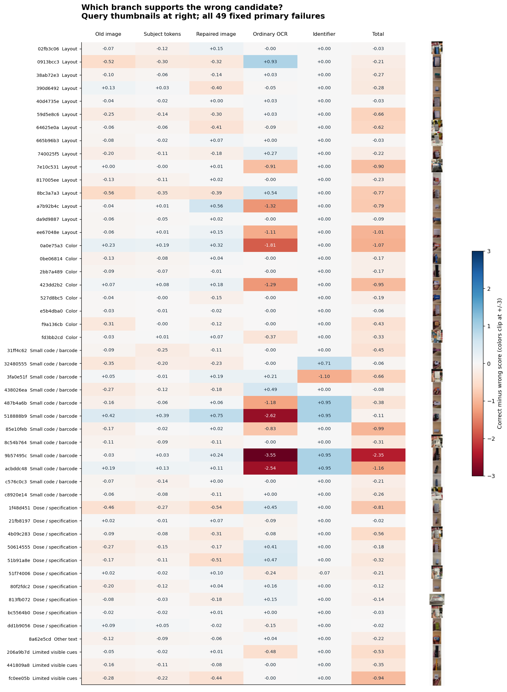
总览二：49张在七种固定干预中的完整图库排名 展示原主方案、纯修复图像、混合图像、修复图像＋OCR、去普通文字、去编号和1063组合。格内是正确参考的完整图库排名，不是仅在正确／错误二选一中的胜负。逐例挑最好配置仍只作诊断，所有方案的全量误伤见原报告对照表。
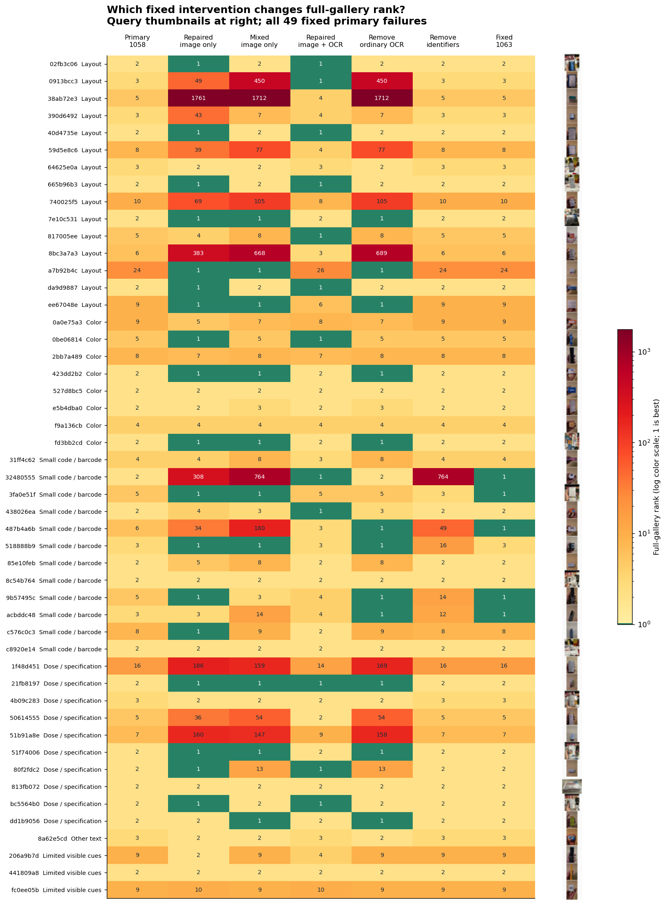
总览三：18张图像正确、最终融合错误的四格对照 分别加入旧图像混合和OCR，得到四种组合；7张仅旧图像混合单独翻错，8张仅OCR单独翻错，2张两种添加各自都能翻错，1张只有两者合用才翻错。不同组合的最强错误候选可能变化，详情保留各组实际候选。
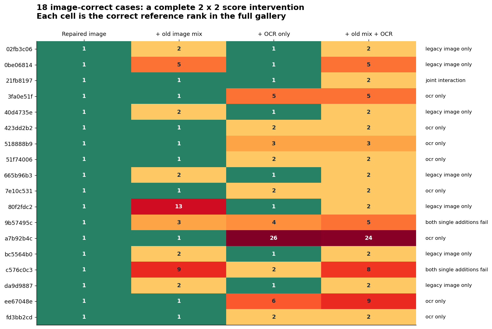
20个展开案例：包含全部5个新修复和各类仍失败样本 点击案例展开；点击证据图可查看大图。全部49张证据图也已接入下方“逐例检索”的图片详情。47张有已核验Token缓存；324805与dd1b两张没有对应Token数组，明确保留空位，不用其他候选的图替代。
版式/空间结构 · 仍失败对照 · 排名 2 → 2 · photo_02fb3c06e1fb70e5相关错误类型： 版式、颜色。含逐Token空间热图。两列排名依次为1058主方案与1063固定探索组合。
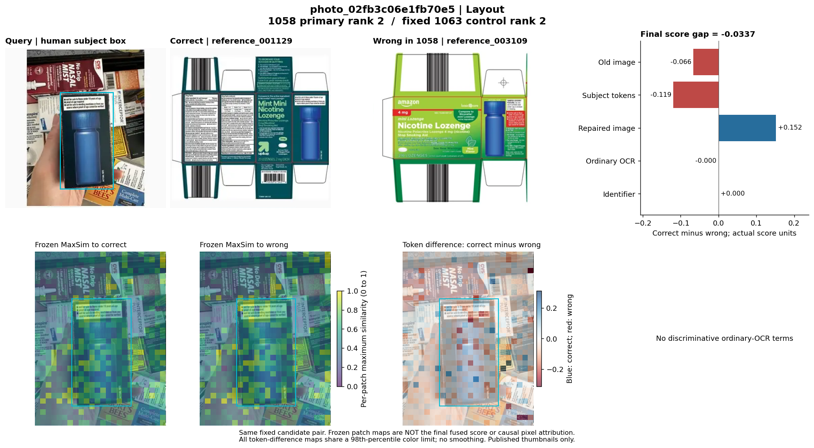
观察： 版式差异可见，修复图像排名已正确；旧整图和主体Token的负贡献使混合后排错。移除旧图像影响可修复。该证据确定融合冲突，不单独证明修复由版式信号引起。
实验支持的结论： 已验证计分机制：旧图像混合单独翻错。四组完整图库排名分别为：修复图像 1，混合图像 2，修复图像＋OCR 1，最终混合＋OCR 2。这证明特定计分接口导致本例错误，不单独证明颜色或版式的编码机制。
修复方向： 对齐同一包装面，比较文字块、行长、换行和图形相对位置；保持文字内容固定验证布局作用。已有几何对照不能替代这些可见面的布局核验。 优先校准旧整图/主体Token与修复图像的融合；此处已定位到分支冲突，不能归为修复图像完全没有信息。
版式/空间结构 · 仍失败对照 · 排名 3 → 3 · photo_0913bcc35e9beb5a相关错误类型： 版式、颜色、文字内容。含逐Token空间热图。两列排名依次为1058主方案与1063固定探索组合。
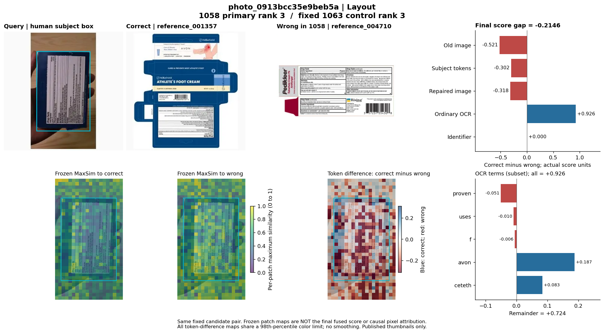
观察： 宽幅Drug Facts版式/配色可分；应同时检查OCR读取和图像同面结构，不能把共有成分名视为身份充分证据。
实验支持的结论： 图像压过正确OCR支持：固定正确／错误候选对的各支路差额可精确重构。至少一种预先固定的完整图库干预能恢复正确排名；支持该计分环节造成当前错误，但不证明视觉差异全部由编码器编码。
修复方向： 对齐同一包装面，比较文字块、行长、换行和图形相对位置；保持文字内容固定验证布局作用。已有几何对照不能替代这些可见面的布局核验。 OCR已有正确支持但不足以压过图像负差额；先查负图像分支与可见局部，再测试可靠证据的融合。
颜色 · 仍失败对照 · 排名 9 → 9 · photo_0a0e75a3b7797609相关错误类型： 颜色、共有品牌面。含逐Token空间热图。两列排名依次为1058主方案与1063固定探索组合。
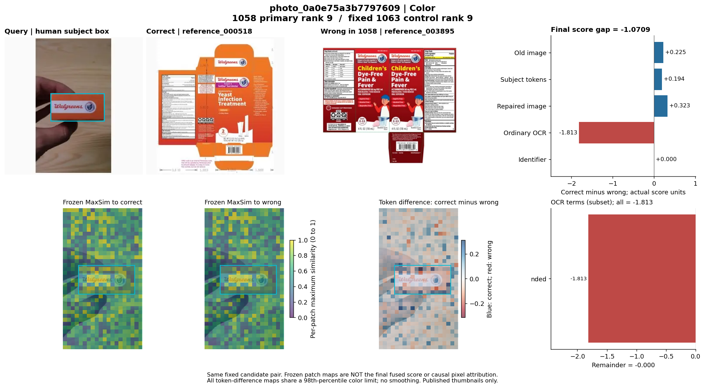
观察： 只见共有Walgreens品牌面，主要线索是橙/红底色；OCR不应被期待凭共有品牌恢复身份。
实验支持的结论： OCR压过混合图像：固定正确／错误候选对的各支路差额可精确重构。所有本轮通用干预仍失败；可确定当前计分不能分开候选，不能据此断言信息在编码器中完全不存在。
修复方向： 按同一可见面做色域比较并控制光照/白平衡；整张展开图的颜色直方图不能替代局部颜色证据。 检查下列负向词和编号串；验证OCR读取质量、字段绑定和融合强度，避免稀有误读词压过图像。
颜色 · 仍失败对照 · 排名 5 → 5 · photo_0be06814ec4048e3相关错误类型： 颜色、图案细节。含逐Token空间热图。两列排名依次为1058主方案与1063固定探索组合。
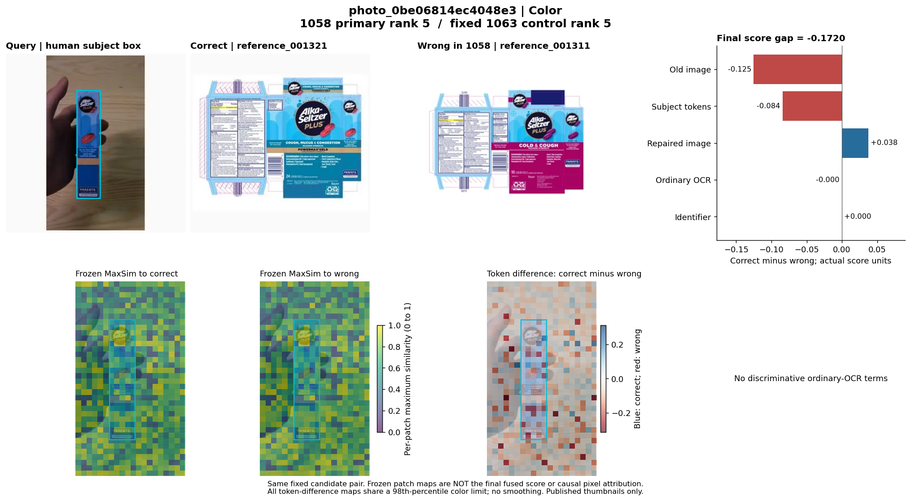
观察： 同系列Alka-Seltzer侧面共有文字；Query胶囊红色、色带偏金棕，对照错误包装胶囊和色带偏紫红。
实验支持的结论： 已验证计分机制：旧图像混合单独翻错。四组完整图库排名分别为：修复图像 1，混合图像 5，修复图像＋OCR 1，最终混合＋OCR 5。这证明特定计分接口导致本例错误，不单独证明颜色或版式的编码机制。
修复方向： 按同一可见面做色域比较并控制光照/白平衡；整张展开图的颜色直方图不能替代局部颜色证据。 优先校准旧整图/主体Token与修复图像的融合；此处已定位到分支冲突，不能归为修复图像完全没有信息。
剂量/规格文字 · 仍失败对照 · 排名 16 → 16 · photo_1f48d45127db4129相关错误类型： 剂量规格、版式、文字内容。含逐Token空间热图。两列排名依次为1058主方案与1063固定探索组合。
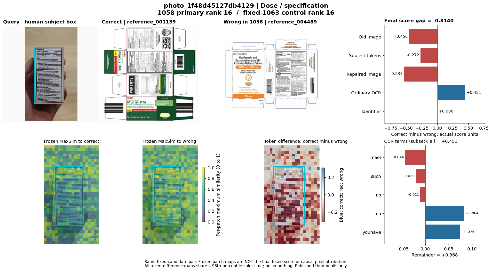
观察： Query的Drug Facts明确为Dextromethorphan 60 mg、Guaifenesin1200 mg；错误参考为30mg/600mg。Drug Facts栏宽和换行也不同。
实验支持的结论： 图像压过正确OCR支持：固定正确／错误候选对的各支路差额可精确重构。所有本轮通用干预仍失败；可确定当前计分不能分开候选，不能据此断言信息在编码器中完全不存在。
修复方向： 把数字绑定到单位、成分、数量或体重档及所在行；不能将警告中的所有数字当成本品规格。 OCR已有正确支持但不足以压过图像负差额；先查负图像分支与可见局部，再测试可靠证据的融合。
弱线索/可见面受限 · 仍失败对照 · 排名 9 → 9 · photo_206a9b7d61884264相关错误类型： 共有品牌面、弱色差。含逐Token空间热图。两列排名依次为1058主方案与1063固定探索组合。
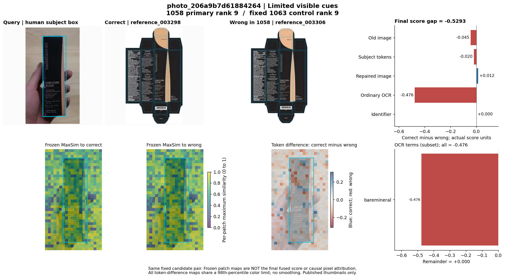
观察： Query只见共有bareMinerals正面和很窄肤色色条；参考差异NATURAL05/WHEAT4.5在未露出的盖面。所见色条差异弱，不能据参考全图差异断言Query可用；保留评测，不自动新增剔除。
实验支持的结论： 旧图像分支压过修复图像：固定正确／错误候选对的各支路差额可精确重构。所有本轮通用干预仍失败；可确定当前计分不能分开候选，不能据此断言信息在编码器中完全不存在。
修复方向： 保持原评测与13张排除名单；单列可见线索强度，复核局部差异或补拍判别面后再决定可分性。 优先校准旧整图/主体Token与修复图像的融合；此处已定位到分支冲突，不能归为修复图像完全没有信息。
剂量/规格文字 · 仍失败对照 · 排名 2 → 2 · photo_21fb819788729c55相关错误类型： 剂量规格、颜色。含逐Token空间热图。两列排名依次为1058主方案与1063固定探索组合。
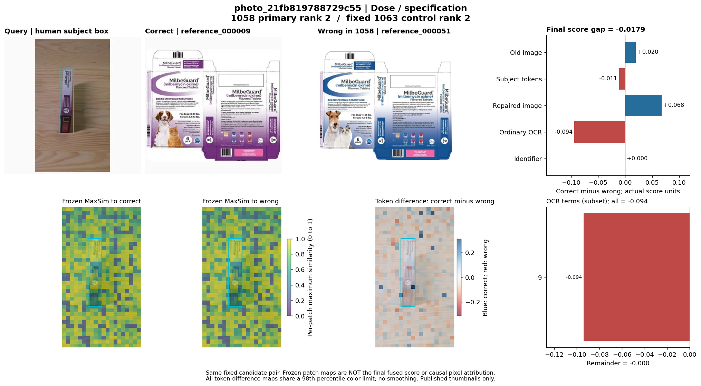
观察： 体重档文字已被旧OCR读到，但对当前正负参考的净负文字项仅为“9”（−0.0941）；混合图像支持+0.0762被压过。去普通文字保留编号可到第1。
实验支持的结论： 已验证计分机制：两者单独不翻错，合用翻错。四组完整图库排名分别为：修复图像 1，混合图像 1，修复图像＋OCR 1，最终混合＋OCR 2。这证明特定计分接口导致本例错误，不单独证明颜色或版式的编码机制。
修复方向： 把数字绑定到单位、成分、数量或体重档及所在行；不能将警告中的所有数字当成本品规格。 检查下列负向词和编号串；验证OCR读取质量、字段绑定和融合强度，避免稀有误读词压过图像。
小码/条码编号 · 已修复对照 · 排名 2 → 1 · photo_324805558f8eab41相关错误类型： 小码、颜色、版式。本例未保存已核验Token热图，仅展示计分证据。两列排名依次为1058主方案与1063固定探索组合。
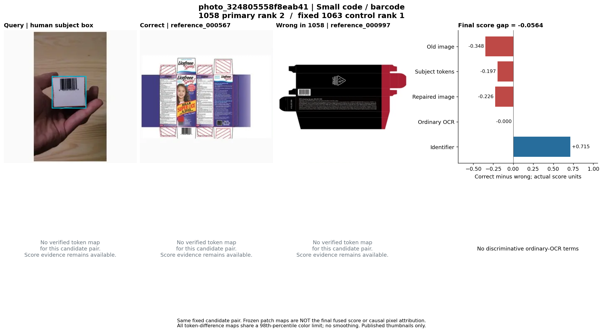
观察： Query主要信息为UPC083926243003；错误参考为不同产品且条码数字不同。新OCR丢失旧编号支持已有干预证据。
实验支持的结论： 图像压过正确OCR支持：固定正确／错误候选对的各支路差额可精确重构。至少一种预先固定的完整图库干预能恢复正确排名；支持该计分环节造成当前错误，但不证明视觉差异全部由编码器编码。
修复方向： 定位条码与旁侧编号，转正/局部重读并做格式与校验位检查；区分独有商品码、共有说明数字和占位码。 OCR已有正确支持但不足以压过图像负差额；先查负图像分支与可见局部，再测试可靠证据的融合。
小码/条码编号 · 已修复对照 · 排名 5 → 1 · photo_3fa0e51f2f450f84相关错误类型： 小码、剂量规格、颜色、版式、文字内容。含逐Token空间热图。两列排名依次为1058主方案与1063固定探索组合。
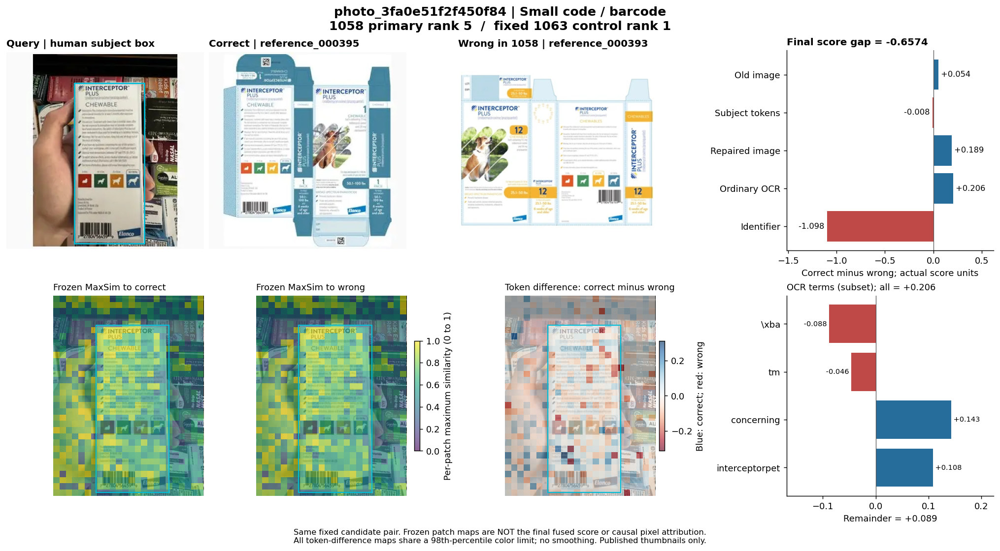
观察： 可见UPC旧OCR接近读全，但编号支路没有获得这条独有码的支持；25.1–50lbs表格档位被抽成25150及251501BS，分别额外支持错误候选，合计约−1.1703。字段未区分且同源变体重复加分。去全部OCR可到第1，单去编号仍第3。 新增像素条码解码自动读出727804564599；全图库统一加权1后恢复第1。证实可读编号线索存在，原读取/编号利用链路不足。
实验支持的结论： 已验证计分机制：OCR单独翻错。四组完整图库排名分别为：修复图像 1，混合图像 1，修复图像＋OCR 5，最终混合＋OCR 5。这证明特定计分接口导致本例错误，不单独证明颜色或版式的编码机制。
修复方向： 定位条码与旁侧编号，转正/局部重读并做格式与校验位检查；区分独有商品码、共有说明数字和占位码。 检查下列负向词和编号串；验证OCR读取质量、字段绑定和融合强度，避免稀有误读词压过图像。
小码/条码编号 · 已修复对照 · 排名 6 → 1 · photo_487b4a6b018c220d相关错误类型： 小码、版式。含逐Token空间热图。两列排名依次为1058主方案与1063固定探索组合。
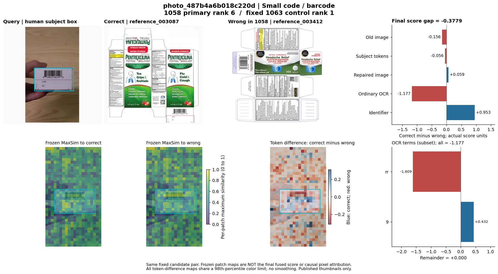
观察： Query底面UPC810053181546与错误参考070038201670不同；Lot/Exp位置和底面线条亦不同。 新增像素条码解码自动读出810053181546；全图库统一加权1后恢复第1。证实可读编号线索存在，原读取/编号利用链路不足。
实验支持的结论： 旧图像分支压过修复图像：固定正确／错误候选对的各支路差额可精确重构。至少一种预先固定的完整图库干预能恢复正确排名；支持该计分环节造成当前错误，但不证明视觉差异全部由编码器编码。
修复方向： 定位条码与旁侧编号，转正/局部重读并做格式与校验位检查；区分独有商品码、共有说明数字和占位码。 优先校准旧整图/主体Token与修复图像的融合；此处已定位到分支冲突，不能归为修复图像完全没有信息。
小码/条码编号 · 仍失败对照 · 排名 3 → 3 · photo_518888b98e9ac193相关错误类型： 小码、颜色。含逐Token空间热图。两列排名依次为1058主方案与1063固定探索组合。
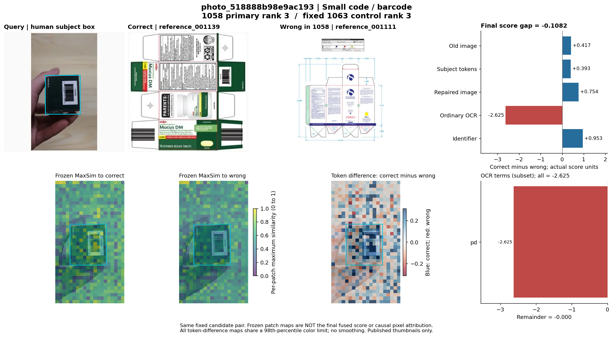
观察： 普通文字的负差额几乎全由PD（−2.6245）产生；图像+1.5635与编号+0.9528仍被压过。去普通文字保留编号可到第1。完整UPC漏首位，已有编号支持来自另一小码。
实验支持的结论： 已验证计分机制：OCR单独翻错。四组完整图库排名分别为：修复图像 1，混合图像 1，修复图像＋OCR 3，最终混合＋OCR 3。这证明特定计分接口导致本例错误，不单独证明颜色或版式的编码机制。
修复方向： 定位条码与旁侧编号，转正/局部重读并做格式与校验位检查；区分独有商品码、共有说明数字和占位码。 检查下列负向词和编号串；验证OCR读取质量、字段绑定和融合强度，避免稀有误读词压过图像。
版式/空间结构 · 仍失败对照 · 排名 2 → 2 · photo_7e10c5317a5e74d8相关错误类型： 版式、颜色。含逐Token空间热图。两列排名依次为1058主方案与1063固定探索组合。
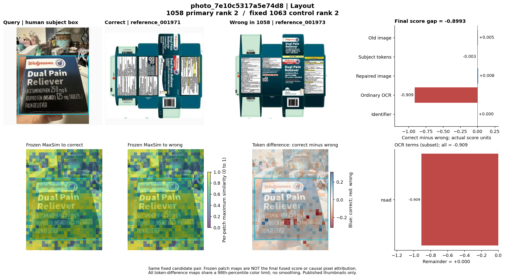
观察： NSAID被读成NSAD；当前正负对文字负差额几乎全部来自nsad（−0.9092），大于图像+0.00994。去普通文字可到第1。
实验支持的结论： 已验证计分机制：OCR单独翻错。四组完整图库排名分别为：修复图像 1，混合图像 1，修复图像＋OCR 2，最终混合＋OCR 2。这证明特定计分接口导致本例错误，不单独证明颜色或版式的编码机制。
修复方向： 对齐同一包装面，比较文字块、行长、换行和图形相对位置；保持文字内容固定验证布局作用。已有几何对照不能替代这些可见面的布局核验。 检查下列负向词和编号串；验证OCR读取质量、字段绑定和融合强度，避免稀有误读词压过图像。
小码/条码编号 · 仍失败对照 · 排名 2 → 2 · photo_85e10feb92319a7b相关错误类型： 小码、版式。含逐Token空间热图。两列排名依次为1058主方案与1063固定探索组合。
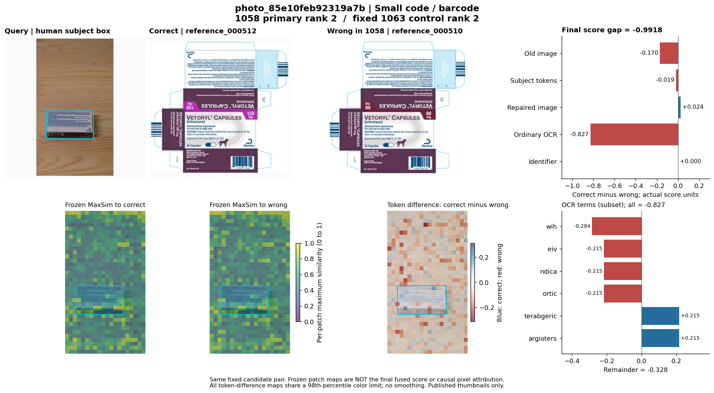
观察： 原图转正可读底面UPC317033112304；错误版本317033160306。旧OCR仅得到断裂的12-30等片段，本轮自动重读未触发，编号差额为0；警告背面共有。
实验支持的结论： 旧图像分支压过修复图像：固定正确／错误候选对的各支路差额可精确重构。所有本轮通用干预仍失败；可确定当前计分不能分开候选，不能据此断言信息在编码器中完全不存在。
修复方向： 定位条码与旁侧编号，转正/局部重读并做格式与校验位检查；区分独有商品码、共有说明数字和占位码。 优先校准旧整图/主体Token与修复图像的融合；此处已定位到分支冲突，不能归为修复图像完全没有信息。
文字内容差异 · 仍失败对照 · 排名 3 → 3 · photo_8a62e5cd6902b0ae相关错误类型： 文字内容、版式、颜色、图案细节。含逐Token空间热图。两列排名依次为1058主方案与1063固定探索组合。
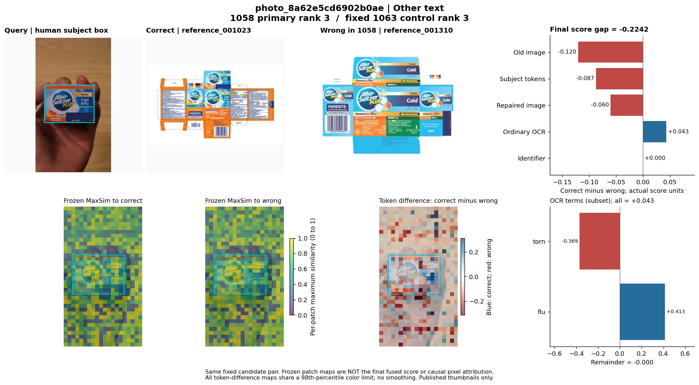
观察： Query盖面明确Cold & Flu，错误盖面Cold；橙色边框、柑橘图与标题比例亦不同。
实验支持的结论： 图像压过正确OCR支持：固定正确／错误候选对的各支路差额可精确重构。所有本轮通用干预仍失败；可确定当前计分不能分开候选，不能据此断言信息在编码器中完全不存在。
修复方向： 核验Query与参考两侧OCR的实际读取，再将身份文字与共有说明区分计分。 OCR已有正确支持但不足以压过图像负差额；先查负图像分支与可见局部，再测试可靠证据的融合。
小码/条码编号 · 已修复对照 · 排名 5 → 1 · photo_9b57495c8cae1f4b相关错误类型： 小码、颜色、版式、文字内容。含逐Token空间热图。两列排名依次为1058主方案与1063固定探索组合。
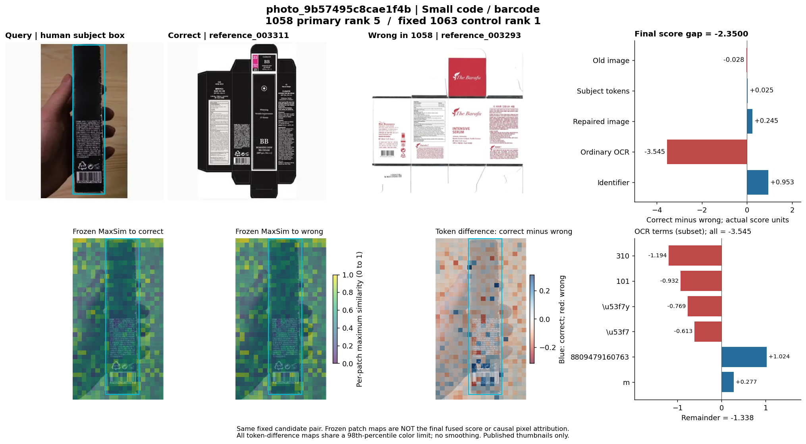
观察： 条码8809479160763已读对且匹配，编号+0.9528；韩文被识别成310、101、号Y等乱码，普通文字净−3.5453。去普通文字保留编号可从第5到第1；去全部OCR仅第3。 自动有效GTIN完整匹配后，统一权重4控制恢复第1；本例已读对，瓶颈在证据加权与文字负贡献。
实验支持的结论： 已验证计分机制：旧图像、OCR各自均能翻错。四组完整图库排名分别为：修复图像 1，混合图像 3，修复图像＋OCR 4，最终混合＋OCR 5。这证明特定计分接口导致本例错误，不单独证明颜色或版式的编码机制。
修复方向： 定位条码与旁侧编号，转正/局部重读并做格式与校验位检查；区分独有商品码、共有说明数字和占位码。 检查下列负向词和编号串；验证OCR读取质量、字段绑定和融合强度，避免稀有误读词压过图像。
小码/条码编号 · 已修复对照 · 排名 3 → 1 · photo_acbddc48df8f77fd相关错误类型： 小码、颜色、版式、文字内容。含逐Token空间热图。两列排名依次为1058主方案与1063固定探索组合。
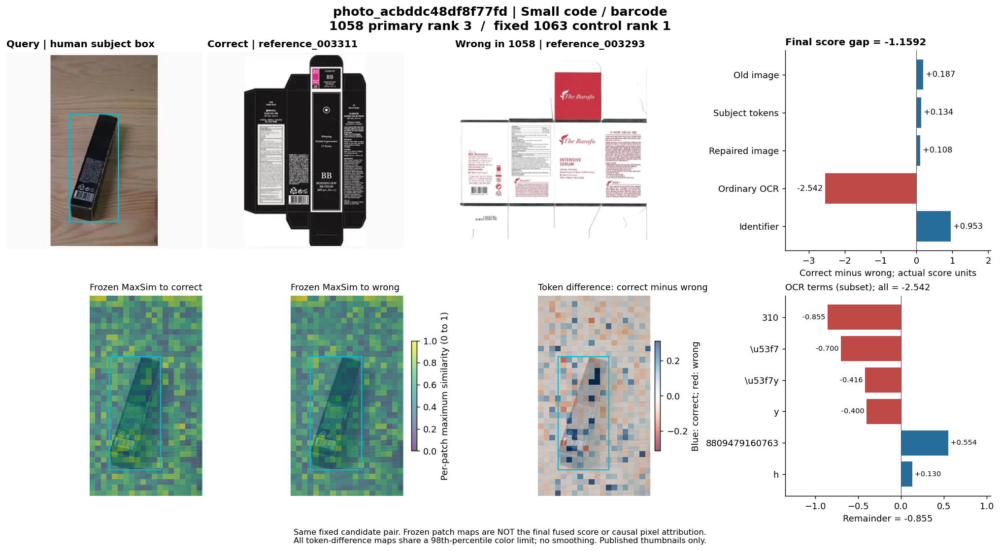
观察： 同一条码已读对且匹配，编号+0.9528；韩文乱码文字净−2.5417压过图像+0.4296。应处理语言/读取质量与融合，而非继续盲目提高码权重。 自动有效GTIN完整匹配后，统一权重4控制恢复第1；本例已读对，瓶颈在证据加权与文字负贡献。
实验支持的结论： OCR压过混合图像：固定正确／错误候选对的各支路差额可精确重构。至少一种预先固定的完整图库干预能恢复正确排名；支持该计分环节造成当前错误，但不证明视觉差异全部由编码器编码。
修复方向： 定位条码与旁侧编号，转正/局部重读并做格式与校验位检查；区分独有商品码、共有说明数字和占位码。 检查下列负向词和编号串；验证OCR读取质量、字段绑定和融合强度，避免稀有误读词压过图像。
小码/条码编号 · 仍失败对照 · 排名 8 → 8 · photo_c576c0c30f74cd4f相关错误类型： 小码、版式。含逐Token空间热图。两列排名依次为1058主方案与1063固定探索组合。
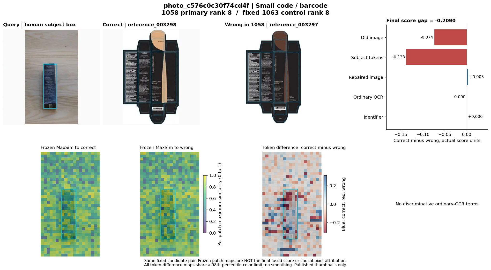
观察： 修复图像完整图库第1；加入旧图像混合后第9，错误参考003297。只加入OCR也变第2，此时错误参考换成003299；修复图像对003299贡献+0.024925，OCR负贡献−0.026066，几乎全部来自OCR中的孤立字母b。最终两者合用第8。已验证两条独立的计分损害路径；小编号8936读取缺失是附加问题，不能代替这两个已查明原因。
实验支持的结论： 已验证计分机制：旧图像、OCR各自均能翻错。四组完整图库排名分别为：修复图像 1，混合图像 9，修复图像＋OCR 2，最终混合＋OCR 8。这证明特定计分接口导致本例错误，不单独证明颜色或版式的编码机制。
修复方向： 定位条码与旁侧编号，转正/局部重读并做格式与校验位检查；区分独有商品码、共有说明数字和占位码。 优先校准旧整图/主体Token与修复图像的融合；此处已定位到分支冲突，不能归为修复图像完全没有信息。
小码/条码编号 · 仍失败对照 · 排名 2 → 2 · photo_c8920e14924534af相关错误类型： 小码。含逐Token空间热图。两列排名依次为1058主方案与1063固定探索组合。
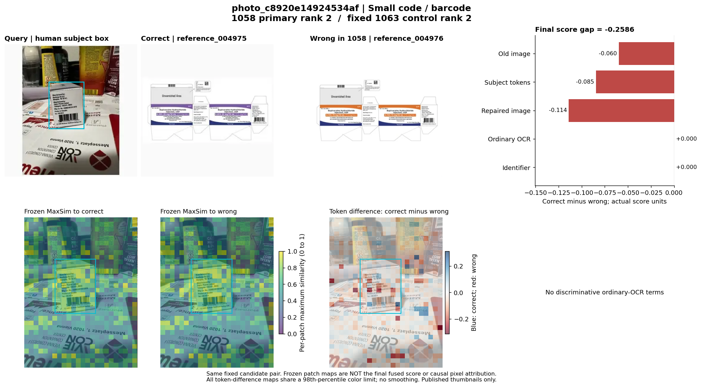
观察： Query完整UPC372603327106清楚，主体白底制造商文字与错误浓度版本共有；正面紫/橙配色未出现在Query。
实验支持的结论： 图像压过正确OCR支持：固定正确／错误候选对的各支路差额可精确重构。所有本轮通用干预仍失败；可确定当前计分不能分开候选，不能据此断言信息在编码器中完全不存在。
修复方向： 定位条码与旁侧编号，转正/局部重读并做格式与校验位检查；区分独有商品码、共有说明数字和占位码。 OCR已有正确支持但不足以压过图像负差额；先查负图像分支与可见局部，再测试可靠证据的融合。
弱线索/可见面受限 · 仍失败对照 · 排名 9 → 9 · photo_fc0ee05b6b185ffa相关错误类型： 共有占位码、版式。含逐Token空间热图。两列排名依次为1058主方案与1063固定探索组合。
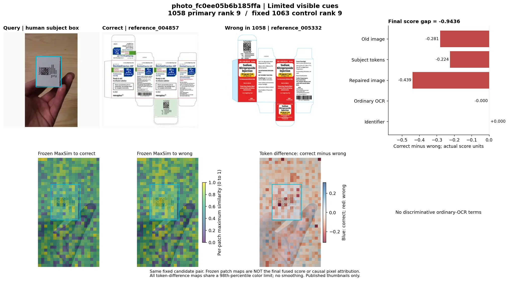
观察： Query可见面印有For Presentation Purposes Only，GTIN/SN/Lot/Exp均为X占位；不能把这种示意二维代码当作真实独有编号。两参考所示盖面极相似，应核验示意码图形和版式是否真实可区分，保持原队列，不自动剔除。
实验支持的结论： 图像与OCR均未支持正确候选：固定正确／错误候选对的各支路差额可精确重构。所有本轮通用干预仍失败；可确定当前计分不能分开候选，不能据此断言信息在编码器中完全不存在。
修复方向： 保持原评测与13张排除名单；单列可见线索强度，复核局部差异或补拍判别面后再决定可分性。 两路对当前候选均不利；按可见线索分别核验输入读取、同面匹配和计分，现有分差不能证明编码器永久丢失信息。
颜色 · 仍失败对照 · 排名 2 → 2 · photo_fd3bb2cdcb3bd3a7相关错误类型： 颜色、剂量规格、文字内容。含逐Token空间热图。两列排名依次为1058主方案与1063固定探索组合。
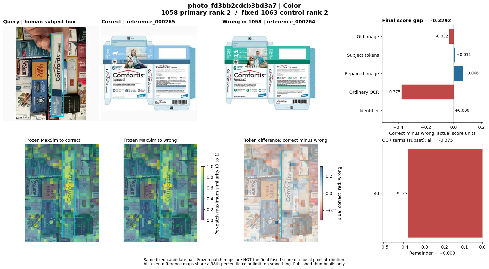
观察： 文字负差额几乎全部来自“40”（−0.3750）；体重字段被拆碎，失去区间语义。蓝/绿可见色差及图像正支持没有挡住该负分；去普通文字可到第1。
实验支持的结论： 已验证计分机制：OCR单独翻错。四组完整图库排名分别为：修复图像 1，混合图像 1，修复图像＋OCR 2，最终混合＋OCR 2。这证明特定计分接口导致本例错误，不单独证明颜色或版式的编码机制。
修复方向： 按同一可见面做色域比较并控制光照/白平衡；整张展开图的颜色直方图不能替代局部颜色证据。 检查下列负向词和编号串；验证OCR读取质量、字段绑定和融合强度，避免稀有误读词压过图像。
49例图表数据与绘制口径 · 图表校验记录 · 可复现绘图脚本 · 查看全部49例 · 查看1063组合剩余44例
历史阶段：1041锁定方案 · 保留原实验记录
历史锁定方案：数值分词＋主体 Token＋图像修复1041/1117
原来的 1035/1117（92.66%） 已完整复现。本轮保留这套方案，再追加冻结的图像修复分支，达到 1041/1117（93.20%） ：救回 11 张，新增 5 张错误，净增 6 张。历史测试集由 149/161 提高到 150/161。
新图像分支可以补充部分原方案漏掉的信息，但收益有限且存在损害。按包装身份聚类的配对重采样，全量提升的 95% 区间为 −0.18～+1.33 个百分点，测试集为 −1.82～+3.82 个百分点，均包含零；因此当前结论是观察到小幅净增益，尚未证明稳定泛化提升 。历史测试集已被多轮查看，这些结果属于探索性证据。
可见性口径：fbc颜色可分，8c54、c892、c576、f8有码，全部保留评测；85e本已保留。只剔除其余13张Query。最新最终联合为1055/1104，追加编号对照1056/1104；全量分别为1058/1117、1059/1117。历史1041方案及1051数字串对照仍另列。查看完整更新
完整结果 RoMa缓存 坐标与最终联合 Query剔除统计 颜色干预 编号验证 怎么追加 5 个新增错误 历史1041的76个错误 可见面与编号复核 逐图查看 证据文件 此前实验 整体结果与比较对象 具体怎么做：12 完整图库输入修复：13 个命名配置和 72 点选参 · 03 主体 Token 重加权：只改读出，不重新编码 · 14 图像×OCR 的 48 个替换组合 · 15 保留1035，再加入图像修复：1041是怎样得到的
以下前四组保留早期1041阶段的比较对象；最新坐标实验、1058最终联合及1059追加对照见本节后续汇总与“坐标与最终联合”。 四组分别展示纯图像、既有主体 Token、完整图像×OCR交叉对照和最终追加方案。所有表均基于同一 1117 张照片、5405 行参考图、按 SHA 去重的 5330 个候选；验证集173张、历史测试集161张。Top-1按照片计数，选参则使用包装身份宏平均。
结果演进： 纯图像870 → 输入与分支修复944 → 加入验证集选择的RoMa支持991；融合972 → 文字及主体修复1035 → 历史锁定1041 → 数字串固定对照1051 → 最终图像/OCR联合1058。保留旧编号的事后追加对照1059单列，不替代1058。箭头表示方法演进，不代表每个样本单调改善。归一化对照1042也完整列出。
1．纯图像：全部13个命名配置 纯图像方案 正确数 Top-1 错误数 验证集 历史测试集 对原870：修复／损害 说明 原全图＋历史参考图 870/1117 77.89% 247 136/173 125/161 0 / 0 原始870基线 原全图＋当前运行时参考图 867/1117 77.62% 250 135/173 124/161 10 / 13 867是运行时对照；不冒充历史870的精确重现 人工框裁剪＋历史参考图 883/1117 79.05% 234 137/173 125/161 63 / 50 替换5个过时裁剪后；只使用人工审核框 人工框裁剪＋当前参考图 887/1117 79.41% 230 136/173 127/161 67 / 50 人工裁剪与当前参考图交叉 原全图与人工裁剪各50%＋历史参考图 898/1117 80.39% 219 141/173 125/161 57 / 29 旧参考图库上的固定照片分数混合 原全图＋高细节参考图 894/1117 80.04% 223 128/173 132/161 72 / 48 只改变参考图输入，照片保持原图 原全图＋放大低细节参考图 901/1117 80.66% 216 133/173 133/161 78 / 47 此前询问的901；只改变参考图输入 只混合照片分支：原全图／裁剪各50% 903/1117 80.84% 214 139/173 127/161 65 / 32 参考图固定为当前运行时版本 只混合参考分支：当前75%＋放大低细节25% 899/1117 80.48% 218 138/173 130/161 39 / 10 照片固定为原全图 固定交叉组合：裁剪50%＋放大低细节25% 928/1117 83.08% 189 142/173 129/161 77 / 19 先验固定组合；没有按测试集挑选 验证集选定图像修复：裁剪100%＋高细节75% 944/1117 84.51% 173 144/173 128/161 113 / 39 后续联合实验冻结使用的图像分支；并非所有子集最优 人工裁剪＋高细节参考图（不混合） 936/1117 83.80% 181 137/173 129/161 116 / 50 参考图100%高细节 人工裁剪＋放大低细节参考图（不混合） 933/1117 83.53% 184 137/173 128/161 110 / 47 参考图100%放大低细节
本表修复／损害统一对照历史原图像870，不能把867与870当作同一次运行时的精确复现。主体 Token 纯图像906在下一表列出；裁剪输入与冻结特征上的主体读出是不同实验。
2．既有主体 Token：全部7个选定方案 既有主体 Token 方案 主体权重 正确数 Top-1 错误数 验证集 历史测试集 比较基线 修复／损害 主体 Token 纯图像（无 OCR） 1 906/1117 81.11% 211 142/173 132/161 原图像870 67 / 31 主体 Token＋原 OCR，重新归一化 0.5 987/1117 88.36% 130 150/173 142/161 原融合972 19 / 4 主体 Token＋原 OCR，固定归一化 1 995/1117 89.08% 122 153/173 142/161 原融合972 29 / 6 主体 Token＋文字联合修正，重新归一化 1 1035/1117 92.66% 82 160/173 151/161 原图像＋文字联合修正1026 17 / 8 主体 Token＋文字联合修正，固定归一化 1 1032/1117 92.39% 85 159/173 151/161 原图像＋文字联合修正1026 14 / 8 主体 Token＋数值分词，重新归一化 0.2 1035/1117 92.66% 82 163/173 149/161 原图像＋数值分词1029 6 / 0 主体 Token＋数值分词，固定归一化 0.2 1034/1117 92.57% 83 162/173 149/161 原图像＋数值分词1029 5 / 0
主体权重按各自验证集选定，包含原实现保留的模板 Token。重新归一化与固定归一化均保留；“修复／损害”相对于每行明确写出的基线，不能跨行混用。两个1035属于不同方案：文字联合修正的测试为151，数值分词的测试为149。
3．图像×OCR：完整48个组合
6个图像分支 × 4种文字设置 × 2种图像归一化，共48个组合，均已完成。下表每格依次为全量正确数／Top-1、错误数、验证与测试正确数；不加OCR列是图像对照，其余列固定图文各50%。
重新计算当前图像分数的均值和方差（24组） 图像分支 不加 OCR 原 OCR 主体 OCR＋文字计分修正 主体 OCR＋数值分词修正 原全图＋历史参考图 870/1117 · 77.89% 972/1117 · 87.02% 1026/1117 · 91.85% 1029/1117 · 92.12% 原全图＋当前运行时参考图 867/1117 · 77.62% 966/1117 · 86.48% 1026/1117 · 91.85% 1028/1117 · 92.03% 验证集选定图像修复：裁剪100%＋高细节75% 944/1117 · 84.51% 995/1117 · 89.08% 1036/1117 · 92.75% 1031/1117 · 92.30% 固定交叉组合：裁剪50%＋放大低细节25% 928/1117 · 83.08% 987/1117 · 88.36% 1037/1117 · 92.84% 1039/1117 · 93.02% 原全图与人工裁剪各50%＋历史参考图 898/1117 · 80.39% 986/1117 · 88.27% 1027/1117 · 91.94% 1030/1117 · 92.21% 原全图＋放大低细节参考图 901/1117 · 80.66% 976/1117 · 87.38% 1034/1117 · 92.57% 1031/1117 · 92.30%
展开固定历史全图均值和方差的另外24组 图像分支 不加 OCR 原 OCR 主体 OCR＋文字计分修正 主体 OCR＋数值分词修正 原全图＋历史参考图 870/1117 · 77.89% 972/1117 · 87.02% 1026/1117 · 91.85% 1029/1117 · 92.12% 原全图＋当前运行时参考图 867/1117 · 77.62% 966/1117 · 86.48% 1026/1117 · 91.85% 1028/1117 · 92.03% 验证集选定图像修复：裁剪100%＋高细节75% 944/1117 · 84.51% 995/1117 · 89.08% 1031/1117 · 92.30% 1028/1117 · 92.03% 固定交叉组合：裁剪50%＋放大低细节25% 928/1117 · 83.08% 989/1117 · 88.54% 1036/1117 · 92.75% 1038/1117 · 92.93% 原全图与人工裁剪各50%＋历史参考图 898/1117 · 80.39% 988/1117 · 88.45% 1027/1117 · 91.94% 1030/1117 · 92.21% 原全图＋放大低细节参考图 901/1117 · 80.66% 978/1117 · 87.56% 1031/1117 · 92.30% 1030/1117 · 92.21%
例如：新图像944＋原OCR为995，＋文字联合修正为1036，＋数值分词为1031；固定交叉图像928＋文字联合修正为1037，＋数值分词为1039。它们都属于替换式交叉对照，没有保留旧主体 Token 的完整1035流程 ，因此与下方追加实验分别报告。
4．保留原数值分词＋主体 Token，再追加图像修复 最终追加方案 正确数 Top-1 错误数 验证集 历史测试集 对原1035：修复／损害 说明 原数值分词＋主体 Token 1035/1117 92.66% 82 163/173 149/161 0 / 0 本轮直接基线；精确复现原1035 再追加图像修复（主方案） 1041/1117 93.20% 76 163/173 150/161 11 / 5 γ=0.5，保持数值分词、主体权重及融合比例 追加图像修复＋保持旧图像归一化 1042/1117 93.29% 75 163/173 150/161 11 / 4 预设对照；不按全量最高分事后替换主方案 追加图像修复＋直接对文字分数归一化 1041/1117 93.20% 76 163/173 150/161 11 / 5 生产数值分支的实现敏感性对照
主方案1041相对原1035修复11、损害5，测试149→150；保持旧归一化对照1042修复11、损害4，测试同为150。既有“文字联合＋主体”虽然全量1035，测试仍为151，不能声称本轮在所有比较对象或所有子集上领先。
展开最终追加比例γ的全部6个网格对照 γ 正确数 Top-1 错误数 验证集 历史测试集 对原1035：修复／损害 0 1035/1117 92.66% 82 163/173 149/161 0 / 0 0.1 1038/1117 92.93% 79 163/173 149/161 3 / 0 0.25 1040/1117 93.11% 77 163/173 149/161 6 / 1 0.5（选定） 1041/1117 93.20% 76 163/173 150/161 11 / 5 0.75 1036/1117 92.75% 81 160/173 150/161 14 / 13 1 1034/1117 92.57% 83 161/173 148/161 16 / 17
下载完整汇总数值 · 全部配置及来源 · 纯图像72个选参配置的完整曲线数据 · 替换版OCR权重曲线
13个图像配置、7个既有主体方案、48个交叉组合、4个最终方案与6个追加权重条目此前合计78条记录；本轮另补24组自动数字串对照，另补92条RoMa缓存、位置打乱与主体门控配置，完整导出共751条（原698条＋36组计分修正＋10组自动编号控制＋3组编号组合＋4组接口对照）。包含重复对照，不代表互不重复的新模型。每例真值选权重、真值选词删除和100例裁剪诊断不混入全量检索主指标，证据见对应章节。
5．最新Query剔除统计与24组自动数字串对照 具体怎么做：16 自动编号匹配：24组配置和人工读数诊断 · 31 剔除13张有歧义query：只改统计分母
本轮新增结果及全部配置见下方Query可见面统计 和编号验证 。最新只剔除13张，固定权重1为1051/1117、1050/1104；原主方案仍为1041。验证名单更正后的选择敏感性单独列出，完整结果导出已补入24组对照。
最新完整比较还包括RoMa缓存复用 ：无OCR分支944→982；联合固定规则1051→1057（未被验证选中）。原1041主方案保留不变。
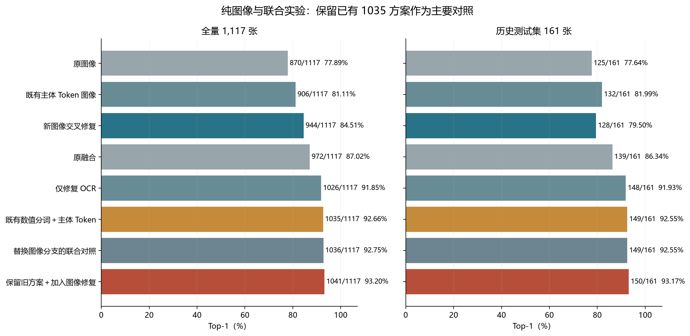
图中的追加方案保持原数值分词和主体 Token。另一个既有“文字联合＋主体”方案测试为 151/161，也保留在上表。
Query可见面信息不足：按用户最新确认名单剔除13张
不是 reference 有问题，而是名单中的 Query 原图所拍可见面被用户判定不足以定夺身份。 最初18张中，photo_fbc7b6d852b1125b 已更正为颜色可分；随后恢复有码的 photo_c8920e14924534af、photo_8c54b7644f2e05b2、photo_c576c0c30f74cd4f、photo_f8f533ac85b05854，最终只剔除13张。photo_85e10feb92319a7b 本来就在保留组。照片有码、OCR读对、编号计分有效是三个不同判断。只移除查询行；5405行参考图／5330个去重候选、130个包装身份、真值标签和原模型参数保持不变。
主方案全量仍为 1041/1117（93.20%） ；剔除后为 1041/1104（94.29%），63个失败 ，对应历史测试子集为150/158（94.94%）。这是用户给定可见性名单的事后敏感性统计，不是模型新增修复，也不证明其余1104张都已完成可辨性审核。所有方案均按同一名单重算。
此前1051→1049，是旧17张剔除名单包含自动数字串对照已检索正确的 photo_2d06e466a2c40697 与 photo_f8f533ac85b05854。现在f8已恢复，最新为1050/1104 ；仅2d仍在用户给定剔除名单中。这是改变统计范围，不是排名退化。
方案 原始全量 剔除13张后 剔除后Top-1 剔除后的历史测试 原图像 870/1117 868/1104 78.62% 124/158 图像修复 944/1117 943/1104 85.42% 127/158 原融合 972/1117 969/1104 87.77% 139/158 主体OCR＋文字计分修正 1026/1117 1024/1104 92.75% 148/158 数值分词 1029/1117 1028/1104 93.12% 148/158 数值分词＋主体Token 1035/1117 1034/1104 93.66% 149/158 再追加图像修复（主方案） 1041/1117 1041/1104 94.29% 150/158 自动数字串累加＋容许1字符差异，固定权重1（探索性） 1051/1117 1050/1104 95.11% 151/158
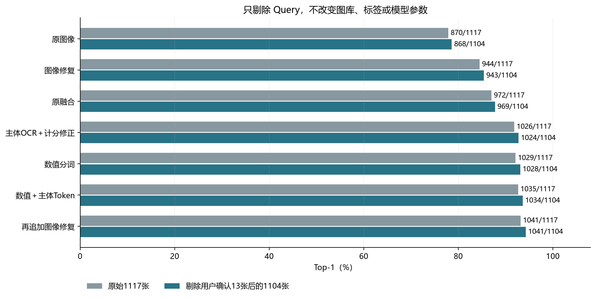
查看剔除13张照片 查看保留1104张 查看保留的63个错误
展开13张Query照片及用户确认原因
最新名单与实验协议 · 73个已有比较项的同名单重算 · 本轮更新前备份（本地附件）
颜色可分案例：photo_fbc7b6d852b1125b 具体怎么做：17 fbc7…颜色×编号的固定候选对干预
按用户更正，本例保留评测，并撤回“天然排版差异经典案例”的称呼。正确参考003333与最终错误参考003331的侧面文字位置基本一致：对照区文字外接框相同，归一化文字掩码IoU为0.9735；颜色不同。此检查仅覆盖该可见侧面，不代表整张展开图完全相同。
已完成纯图像干预： 固定同一正负候选，比较原始输入、编号隐藏、灰度化、侧面颜色交换及空白区域编辑对照；照片包含原图和人工框裁剪两种读出。原照片编码与历史缓存逐位一致，参考重复编码和输入拆包重组均逐位一致。下表为mean MaxSim正负分差，正数支持正确候选。
参考输入对照 原照片分差 人工框裁剪分差 原始 -0.004993 -0.002617 空白区域编辑对照 -0.001961 -0.001915 隐藏参考编号区域 +0.003849 +0.001142 参考转灰度 +0.003154 +0.009205 交换参考侧面颜色 -0.001571 -0.002746
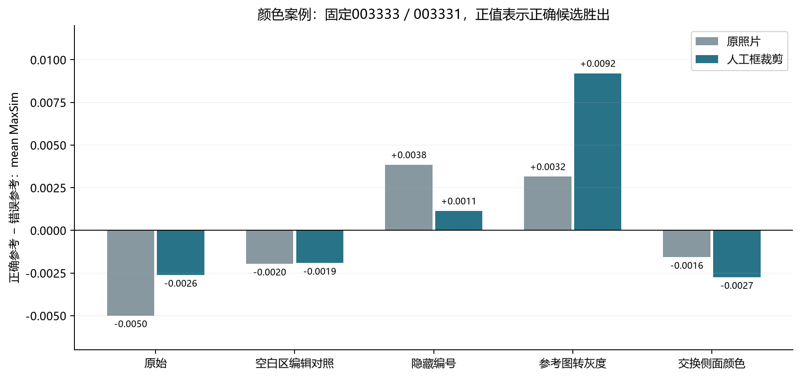
颜色与编号区域的干预确实改变了偏好；隐藏编号或将参考转灰度可使这组配对转正，空白编辑对照没有转正。但交换侧面颜色并未稳定翻转偏好。因此不能把“参考转灰度有效”解释成颜色没有价值，也不能单凭某一次遮挡确定唯一根因：这里存在参考上下文、编号区域与颜色表示的交互。
Token对应已补查： 人工指定的照片有色侧面有236个Token；匹配正确／错误参考时，分别仅22.46%／24.58%落在两处同类侧面，其余落在编号区或其他区域。只允许匹配两处同类侧面，照片侧面Token分差仍为−0.003134；仅保留左侧面则为+0.000345。跨面匹配现象成立，但“限制同面就稳定修复”的假设不成立。编码后的Token还可能携带其他区域上下文，不能把匹配坐标直接当作独立语义归因。
进一步裁出可见面并重新编码，校正后的照片侧面匹配彩色左侧参考分差为+0.005266、匹配右侧参考为−0.001990；参考灰度后分别为−0.001366、−0.006060。两侧对照均保留，避免只挑有效的左侧。修复方向是建立稳定的面级对应、颜色／光照适配与局部采样策略 ，再检查完整图库，不能直接把这张错误归为编码器彻底丢失颜色。人工选面与透视校正是诊断工具，本轮没有作为可部署全量改进计分。
查看人工侧面区域及全部颜色干预记录 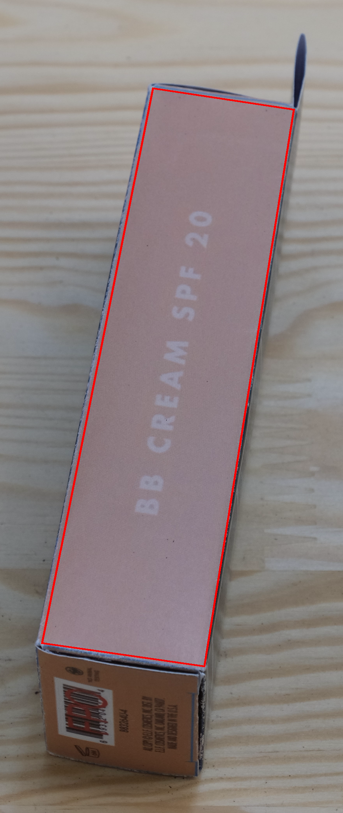
颜色与编号28组配对结果 · 48组Token区域读出 · 12组独立可见面比较 · 逐Token差额
编号：读取、两侧表示与计分分别验证 具体怎么做：16 自动编号匹配：24组配置和人工读数诊断
五个编号案例均保留为诊断，不以人工读数覆盖正式输入。只补充正确的Query编号、保持参考OCR不变，五例中只有颜色案例fbc从第2名恢复第1名；其他例仍受参考文字表示、对手分数或已有正确编号被抵消的影响。参考侧有完整条码被拆分、前缀不在同一字符串，以及产品号／条码表示不同的问题；这不是参考图错误，也不改变用户对Query可见面的判断。
已对五张人工主体裁剪重新自动识别：85e…读到了完整17033-112-30；8c54…得到能与参考产品号相匹配的7260332710；c892…仍输出错误的长数字串；f8…继续读对87936；fbc…仍把B读成8。重识别沿用已校验权重；本轮Paddle运行时为3.2.0，OCR／PaddleX为3.7.0／3.7.2，与历史运行时不完全相同，所以仅作为这五例的新运行诊断，不宣称原缓存的精确OCR重现。
照片 原排名 补人工正确Query编号，原计分 新主体OCR，原计分 新OCR＋编号奖励0.5 新OCR＋编号奖励2 photo_85e10feb92319a7b 2 2 2 2 1 photo_8c54b7644f2e05b2 2 2 2 1 1 photo_c8920e14924534af 2 2 2 2 2 photo_f8f533ac85b05854 6 6 7 1 1 photo_fbc7b6d852b1125b 2 1 1 1 1
后两列统一使用逐编号IDF累加、允许长度至少8的字符串最多1次编辑，没有逐图挑选权重，也没有人工读数参与。完整替换OCR并不自动更好：f8的87936仍读对，排名却由6降到7；单独增强有效编号后能恢复第1。这支持将完整编号的可靠性与普通共有词计分分开 ，而不是重新OCR就算完成修复。c892的错误数字仍无法被该自动规则修复。
完整1117张的自动规则与损害检查
全部候选自动从既有OCR中提取数字串，保留前导零和字符顺序；比较精确匹配／最多1字符差异，以及“任一编号加分”／逐编号IDF累加。逐编号累加、容许1字符差异、固定权重1：1051/1117（94.09%），修复10张、损害0张；最新剔除组1050/1104（95.11%），历史测试151/161。 1117个排名已用独立的稳定排序复算通过；规则输入未使用人工读数。
这是一项探索性固定配置，主结果仍保留1041。 原17张名单下验证集选择权重0。更正为13张后，恢复的验证样本中包括编号修复成功的f8…；在更正后验证集重新套用同一准则，逐编号累加选择exact、权重0.25。这是名单更正后的敏感性复算，不是新的未触碰测试；已锁定主方案仍为1041，固定权重1仍列为探索性对照。 1051不能按全量最高分事后替换主方案。规则提取的是数字串候选，还会包含邮编、联系方式甚至数量范围；因此10个修复不能全部解释为“条码识别成功”，逐例已列出触发字符串。观察到的0损害也不是未来不会误伤的保证。
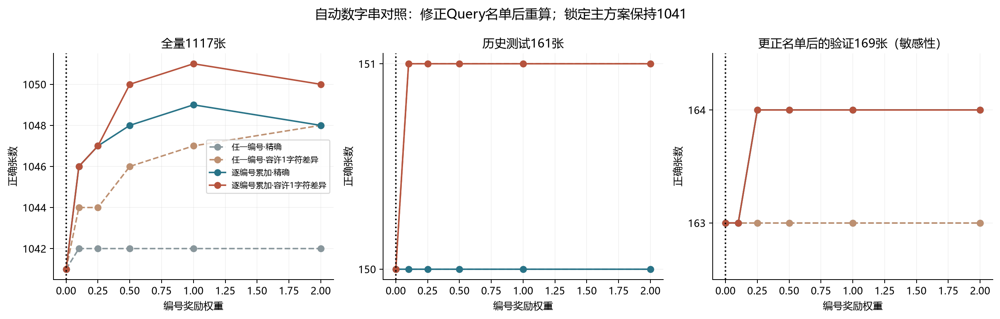
完整24组自动数字串计分对照 计分 匹配 权重 全量 剔除组 历史测试 对1041：修复／损害 任一编号奖励 精确 0 1041/1117 1041/1104 150/161 0 / 0 任一编号奖励 精确 0.1 1042/1117 1042/1104 150/161 1 / 0 任一编号奖励 精确 0.25 1042/1117 1042/1104 150/161 1 / 0 任一编号奖励 精确 0.5 1042/1117 1042/1104 150/161 1 / 0 任一编号奖励 精确 1 1042/1117 1042/1104 150/161 2 / 1 任一编号奖励 精确 2 1042/1117 1042/1104 150/161 2 / 1 任一编号奖励 容许1字符差异 0 1041/1117 1041/1104 150/161 0 / 0 任一编号奖励 容许1字符差异 0.1 1044/1117 1044/1104 151/161 3 / 0 任一编号奖励 容许1字符差异 0.25 1044/1117 1044/1104 151/161 3 / 0 任一编号奖励 容许1字符差异 0.5 1046/1117 1046/1104 151/161 5 / 0 任一编号奖励 容许1字符差异 1 1047/1117 1047/1104 151/161 7 / 1 任一编号奖励 容许1字符差异 2 1048/1117 1048/1104 151/161 9 / 2 逐编号IDF累加 精确 0 1041/1117 1041/1104 150/161 0 / 0 逐编号IDF累加 精确 0.1 1046/1117 1043/1104 150/161 5 / 0 逐编号IDF累加 精确 0.25 1047/1117 1044/1104 150/161 6 / 0 逐编号IDF累加 精确 0.5 1048/1117 1044/1104 150/161 7 / 0 逐编号IDF累加 精确 1 1049/1117 1045/1104 150/161 8 / 0 逐编号IDF累加 精确 2 1048/1117 1044/1104 150/161 8 / 1 逐编号IDF累加 容许1字符差异 0 1041/1117 1041/1104 150/161 0 / 0 逐编号IDF累加 容许1字符差异 0.1 1046/1117 1045/1104 151/161 5 / 0 逐编号IDF累加 容许1字符差异 0.25 1047/1117 1046/1104 151/161 6 / 0 逐编号IDF累加 容许1字符差异 0.5 1050/1117 1049/1104 151/161 9 / 0 逐编号IDF累加 容许1字符差异 1 1051/1117 1050/1104 151/161 10 / 0 逐编号IDF累加 容许1字符差异 2 1050/1117 1049/1104 151/161 11 / 2
查看固定权重1修复的10张及触发字符串
独立排名复算与10例清单 · 固定权重1全部1117例 · 人工Query读数诊断 · 两侧完整编号人工对齐诊断 · 五例新OCR及计分结果 · 完整曲线数据
复算材料：颜色实验冻结特征（本地附件） · 区域逐Token差额 · 新OCR运行时记录 · 本次有码更正前报告备份（本地附件）
剩余54张并不等于无法修复
在剔除13张Query后，锁定主方案还错63张；自动数字串固定权重1的探索性对照还错54张。本节分析后者。逐例对照既有84条全图库配置记录（包含重复对照）发现：34张曾在至少一个其他配置下Top-1正确，其中22张在某个纯图像配置下正确；其余12张仅在所比较的融合或数字串配置中出现正确结果。另20张在这些既有全量配置中都未达到Top-1。
这是一项按真值查找有效配置的诊断，不能把34张直接算作新修复，不能逐张挑最好配置后报告系统准确率；也不能把另外20张归为不可判别。下一步应验证不依赖测试真值的图像输入选择、面级对应和融合权重，并同时检查已有成功样本的损害。
最直接的方向：这54张中，11张在已选定的纯图像修复分支中就是正确的 ，但最终组合没有保住结果。photo_c576c0c30f74cd4f 就是纯图像修复第1、最终组合第8的实例；因此不能只沿“再读OCR”一条路线，也不能未经分量对照就断言一定是OCR压错。应拆开新旧图像分支、文字分支与归一化，寻找自动保留有效信号的条件。
另外20张仍有诊断依据：photo_85e10feb92319a7b 与 photo_c8920e14924534af 在人工核实Query和参考完整编号并调整编号奖励后都可达到第1；前者在本轮选例的自动裁剪OCR加编号计分中也出现正确结果，后者自动OCR仍读错。这说明至少这些个案有信息利用路径，人工读数只作诊断，不能充当自动系统成绩。
查看剩余54张与每例有效配置 其他配置曾正确的34张 既有全量配置未修复的20张 · 逐例对照与适用范围
i14s45历史RoMa缓存：无OCR修复与主体支持核验 具体怎么做：20 复用历史RoMa支持：先不补对应坐标 · 21 主体支持门控：拒绝匹配到别的物体
有帮助，且已完成当前队列复算。 无OCR的现有纯图像修复分支为944/1117；加入RoMa重叠置信度为974/1117，再要求新候选的匹配置信度至少50%落在人工主体框内，达到982/1117（87.91%） ，相对944修复47张、新增9个错误。阈值0.5也由原173张验证集选中。本轮加入了额外RoMa视觉模型与已有人工主体框，不能称为“仅修改ColNomic、不增加任何外部信息”。
在已有1051联合分支上，直接沿用旧RoMa权重0.2，修复8张但新增8个错误，总数仍1051；固定50%主体支持门控保留8个修复，新增错误降至2个，得到1057/1117、1056/1104 。但该门槛未被本轮验证集选中 ，只能列为探索性固定规则结果，不能替换原锁定1041主方案或宣称新盲测成绩。按当前验证规则，联合分支仍选择不切换候选。
方案 全部 准确率 验证 历史测试 剔除13张后 修复／新增错误 选择状态 现有纯图像修复 944/1117 84.51% 144/173 128/161 943/1104 0／0（对944） 既有验证集选择，无OCR 纯图像＋RoMa重叠置信度 974/1117 87.20% 146/173 134/161 973/1104 50／20（对944） 验证集选M，β=0.5 纯图像＋RoMa＋主体支持门控 982/1117 87.91% 148/173 135/161 981/1104 47／9（对944） 验证集选阈值0.5；本轮探索性设计 原数字串固定对照 1051/1117 94.09% 164/173 151/161 1050/1104 0／0（对1051） 原1051分支 1051＋直接RoMa，固定β=0.2 1051/1117 94.09% 163/173 153/161 1050/1104 8／8（对1051） 沿用旧实验权重，非本轮验证选择 1051＋RoMa＋固定主体门控≥50% 1057/1117 94.63% 164/173 154/161 1056/1104 8／2（对1051） 探索性1057，未被验证集选中 1051＋RoMa，验证集选择 1051/1117 94.09% 164/173 151/161 1050/1104 0／0（对1051） 验证集选β=0，保持1051
门控是在查看本轮误伤后设计的，所有测试数据有历史分析暴露；“没有用真值决定某张照片选谁”不等于“整体研究流程没有测试反馈”。此处明确保留这一区别。以上缓存复用结果不包含后续OCR重识别；379张自动触发重识别及坐标补全现已完成，见下方“坐标与最终联合”。
缓存实际包含什么，覆盖哪些候选
精确版RoMaV2缓存包含1117×128＝142,976个Query–候选对。候选来自原始图像检索的自然Top128；本轮复核全部候选轴、原始分数、参考ID/SHA和Query图像哈希。它保存双向重叠置信度图、池化区域支持u/v及加权MaxSim，没有保存warp或密集对应坐标 。旧512缓存的训练候选策略和坐标处理另有差异，未与精确版数值混用，也没有使用带历史训练暴露的旧学习头。
比较对象 当前Top10全部有缓存 正确参考在缓存 固定正负候选对都有缓存 全部1117张，1051分支 753/1117 1076/1117 1023/1117 剩余54张，1051分支 33/54 45/54 42/54 全部1117张，纯图像分支 939/1117 1076/1117 1057/1117
重排仅在原Top10的十个SHA候选都有缓存时执行；否则完整保留原结果。没有补入真值、删去缺缓存候选，或把“缺缓存”当作零分。02fb…的当前Top10一个也不在精确缓存中；0913…缺正确参考。另一套全目录512缓存同样缺这两例正确参考。受限训练候选的旧medicine缓存虽包含02fb…正确参考，却缺当前错误参考，不能拼成同条件竞争实验。因此这些缓存不能直接回答两个排版案例 ；0a0e…的当前Top10则完整覆盖，RoMa本身支持正确候选，但支持强度未必足以胜过其他计分。
查到的机制与竞争解释
仅按RoMa重叠置信度M就能把纯图像分支提高到974；空间区域加权分支S在相同β=0.5下为975，分别打乱Query和参考Token区域权重后仍为975。这不能证明细粒度空间匹配带来提升，更不能证明编码器已保留全部身份布局信息。缓存S仍允许每个Query Token在全部候选Token中取最大值。
直接加入RoMa导致的8个联合新增错误中，正确候选的Query侧重叠置信度均有过半落在人工主体框外；错误候选也有6例如此。框、图像SHA和坐标方向已核验。框外总量较大可能来自低置信度在大面积背景上累积，不应直接解释为“背景含有身份信息”。这只是描述证据；随后对排名做实际门控干预，才检验其作用。
门控只观察RoMa拟切换到的候选 ，不读取正确标签：其Query侧匹配置信度在人工框内占比不足50%时，保留基线排序。纯图像方案达到982，单独按框面积门控只有949，把重叠图整体滚动半幅后门控只有945；联合对应为1057、1052、1051。说明这里可利用的是与主体位置对应的候选相关视觉支持 ，并非只偏好大框；仍不能把它等同于单词行号或词间布局约束。
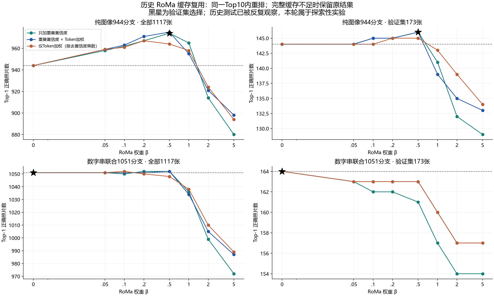
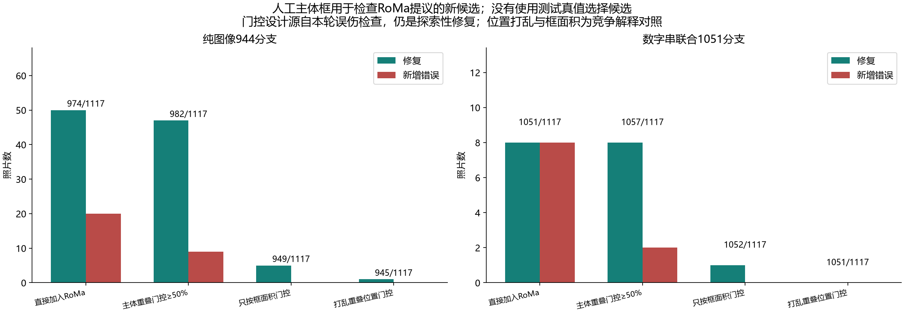
修复、误伤和颜色案例的区域核验图 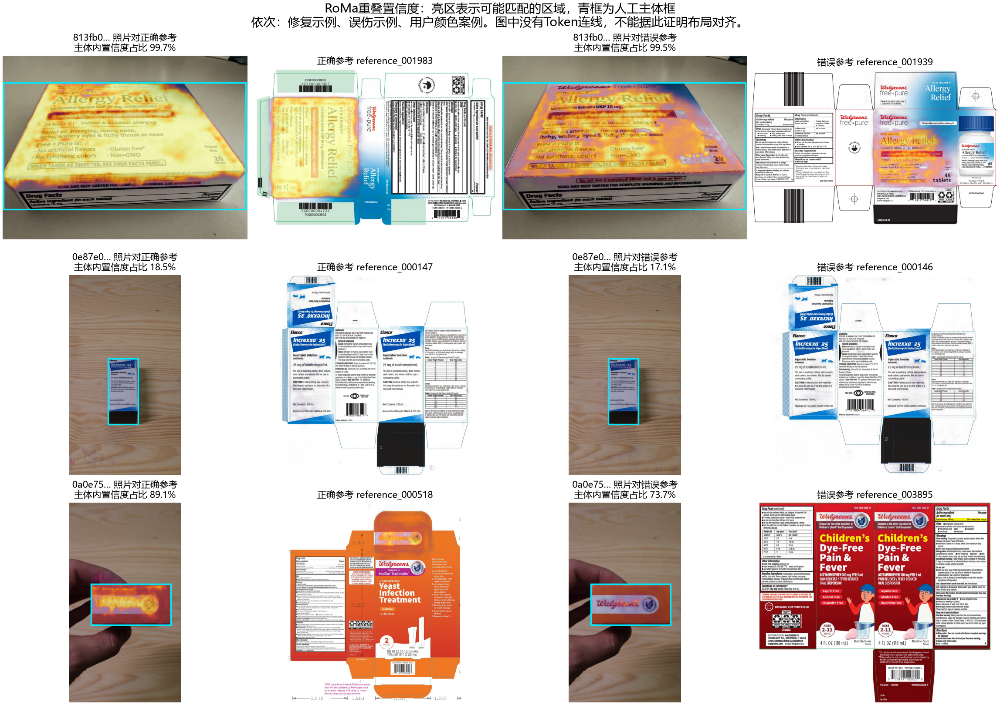
对剩余54张的实际帮助
纯图像门控分支在原54张中正确20张，其中11张原纯图像分支已正确、9张是新增修复。联合固定门控修复其中8张，同时在其他原本成功照片上新增2个错误；剔除组因此从54错降为48错，而不是简单写成46错。这一1057方案未被验证选中，仍按探索性分支单列。原先84条既有配置都未修复的813fb…、a0dda…，这次也出现无需人工读数的可执行修复证据。
修复方向：优先检查候选视觉匹配是否支持人工主体；对缓存未覆盖的当前候选补齐匹配，并保存对应坐标，再测试面级对齐与布局。对已支持正确候选但最终仍错的情况，继续核查其他图库竞争者和融合负贡献。RoMa补充的是视觉证据，不必先诉诸OCR；也不能因此跳过已有编号、分词与文字计分实验。
纯图像新增修复47张 纯图像新增错误9张 联合固定门控修复8张 联合新增错误2张 剩余54中Top10缓存不完整的21张
联合缓存复算 · 纯图像缓存复算 · 主体门控结果 · 全1117逐例门控结果 · 54例正负候选证据 · 全量候选覆盖 · 独立复算校验 · 区域核验 · 实验规则与设计时序 · 更新前报告备份（本地附件）
补齐对应坐标后的全量验证与最终图像 OCR 联合实验 具体怎么做：22 补齐坐标后的320组几何/非几何/颜色对照 · 23 有对应点的颜色评分：与全局色域区别在哪里 · 24 自动触发379张重新OCR：24组增量方案 · 25 最终图像×OCR四组：1051→1056/1054→1058
本轮14,902个图片对已完成，并通过独立核验。 覆盖全部1117张照片，两条既定分支各自自然Top10的并集；133个诊断对另保留完整原生坐标场。人工指定的正确参考只参与诊断，未加入任何方法的推理候选。其余图库分数和排序仍保留，因此这是全1117张上的Top10重排检验，不是重新计算1117×5405个RoMa匹配。
纯图像验证集选择后为991/1117 ；按先固定图像修复、再加入已固定OCR修复的顺序，最终2×2组合为1058/1117（94.72%） ，相对1051修复9张、新增2个错误。此处没有逐例按真值选择最优配置。历史数据已经反复分析，本轮全部结果属于探索性验证，原锁定1041主方案保留。
方案 全部 Top1 验证 历史测试 剔除13张后 修复／新增错误 纯图像／验证集选择 991/1117 88.72% 149/173 137/161 990/1104 56／9（对944） 纯图像／仅特征或置信度选择 991/1117 88.72% 149/173 137/161 990/1104 56／9（对944） 纯图像／几何约束选择 991/1117 88.72% 149/173 136/161 989/1104 62／15（对944） 纯图像／对应区域颜色选择 944/1117 84.51% 144/173 128/161 943/1104 0／0（对944） 1051联合／验证集选择 1055/1117 94.45% 165/173 154/161 1054/1104 10／6（对1051） 1051联合／仅特征或置信度选择 1053/1117 94.27% 165/173 155/161 1049/1104 30／28（对1051） 1051联合／几何约束选择 1059/1117 94.81% 165/173 157/161 1058/1104 12／4（对1051） 1051联合／对应区域颜色选择 1051/1117 94.09% 164/173 151/161 1050/1104 0／0（对1051） 自动主体OCR重新识别 1054/1117 94.36% 165/173 151/161 1053/1104 4／1（对1051） 原图像＋原OCR 1051/1117 94.09% 164/173 151/161 1050/1104 0／0（对1051） 修复图像＋原OCR 1056/1117 94.54% 165/173 154/161 1053/1104 6／1（对1051） 原图像＋修复OCR 1054/1117 94.36% 165/173 151/161 1053/1104 4／1（对1051） 修复图像＋修复OCR 1058/1117 94.72% 166/173 154/161 1055/1104 9／2（对1051） 联合分支重排＋原OCR 1055/1117 94.45% 165/173 154/161 1054/1104 10／6（对1051） 联合分支重排＋修复OCR 1057/1117 94.63% 166/173 154/161 1056/1104 13／7（对1051） 追加对照：原图像＋保留旧编号证据 1055/1117 94.45% 165/173 151/161 1054/1104 4／0（对1051） 追加对照：修复图像＋保留旧编号证据 1059/1117 94.81% 166/173 154/161 1056/1104 9／1（对1051）
纯图像选择：M，权重0.5，主体门槛0.5。联合重排选择：G，权重0.2，主体门槛0。参数只按173张原验证集的包装宏平均Top1、宏平均MRR和预设平局规则选择。所有未选中配置仍完整导出；测试分数不能用于改选参数。
空间匹配到底增加了什么
M是RoMa重叠置信度；S是区域加权但仍无空间约束的ColNomic MaxSim；G不用ColNomic相似度，以RoMa几何一致性和匹配置信度评分；D和H分别加入密集对应坐标、单一平面变换的距离惩罚。Droll、Hroll打乱对应坐标；C和Croll比较匹配位置的颜色及打乱位置的颜色。比较真实坐标和打乱坐标时使用相同权重、相同主体门槛。RoMa本身是额外视觉模型，几何和颜色也增加了原MaxSim没有使用的信息；提升不能单独证明ColNomic已经完整编码布局。
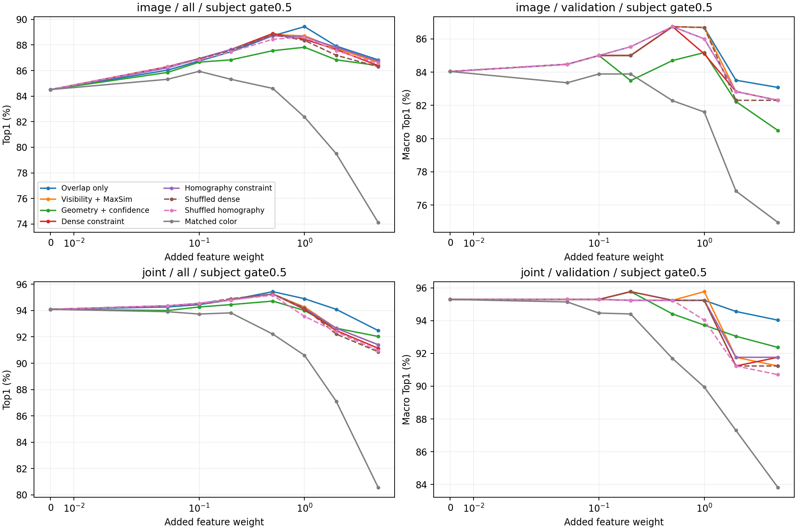
最终先图像后 OCR 的组合检验
先固定纯图像选择，将其对原Top10的排序变化映射回同一批原分数位置；随后仅替换既有融合公式中0.4权重的新图像支路并重新归一化。OCR使用已预设自动触发规则覆盖的379张，含原本成功照片；没有人工读数。最后比较旧图像／新图像×旧OCR／新OCR四组。联合分支直接重排另列，避免与“先修图像再融文字”混为一谈。
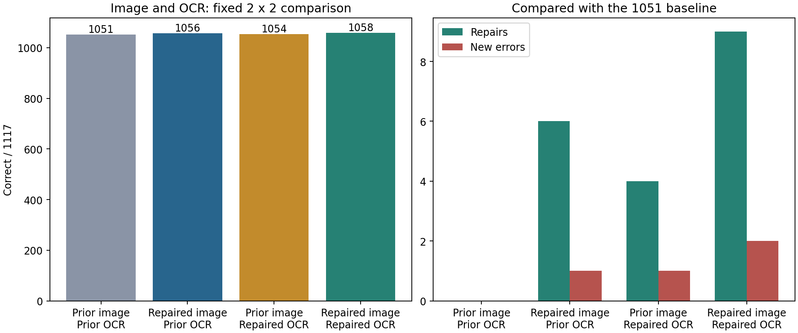
OCR重新识别的评估先按历史单精度累加规则复算全部1117张旧文字和编号分数，再独立核验新分数及全图库排名。初次双精度复算产生的微小差额已定位为数值累加方式不一致，未放宽校验阈值。详见旧分数精确复算 和OCR独立排名核验与修复／误伤分解 。
另增两组编号证据保留对照：对每个候选统一取新旧编号加分的较大值，OCR阈值和权重保持原验证选择。该规则是在观察到重新识别漏掉编号开头、丢失旧匹配奖励后提出的追加实验，不能视为独立验证；它仍可能保留旧的错误匹配。两组结果单列，不替换上面的原定四组。见全量证据保留对照 。
原54张错误的逐例证据和修复方向
54张均已保存固定正负参考的逐Token差额、主体内外贡献、双向匹配和各支路贡献；可在下方逐例检索查看。本轮记录多个可共存的问题，不把一个案例强行归入单一原因。计分代数、匹配干预和像素根因是不同证据层级；不能把尚未成功的修复假设标为因果确认。
本轮最终组合修复 本轮最终组合新增错误 原54张逐Token证据
54张证据与方向 · 逐例完整证据 · 全部坐标对照曲线数据 · 最终联合实验 · 全1117逐例结果 · 独立核验
HoreKa 缓存来源与本轮运行环境
重新核验全部5405参考张量哈希，与找回的HoreKa原始5413行缓存逐位对应；原任务4076613运行于A100。5390行身份名同源一致，其余15行已有标签修订记录，未在本轮修改图库标签。当前Query缓存是439张复用历史特征、678张按h593_encoder_v1生成的混合来源；结果按来源分别统计。RoMa坐标在i14s45运行，ColNomic历史特征保持冻结。历史参考特征与后来的重编码不相等，不能仅凭硬件或缓存差异归因于编码器不稳定。
本轮逐张哈希核验及来源证据 · 15行历史标签对应记录 。源码、坐标约定与输入校验一并归档；原生大型坐标缓存保存在服务器实验目录。
已有修复路线的完整负结果
本轮另完成统一融合权重、全图色度统计和置信度切换对照：相应验证集选择结果为1046、1046、1049，均未超过原1051固定数字串对照。三个重点案例的裁剪、方向和灰度输入也已在5405行完整图库评分；不能把人工指定正负对上的改善直接当成全图库修复。详见全量结果 、当前图库输入干预 和受控输入实验 。
photo_02fb3c06e1fb70e5：MaxSim 与 RoMa 对应 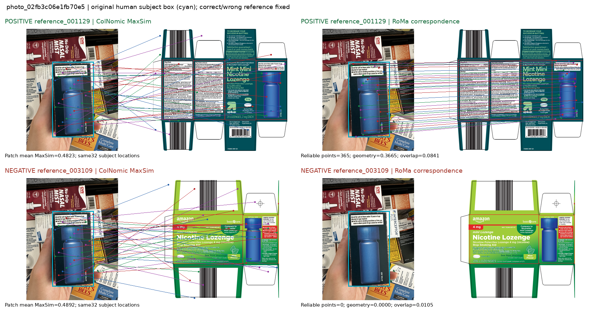
photo_0913bcc35e9beb5a：MaxSim 与 RoMa 对应 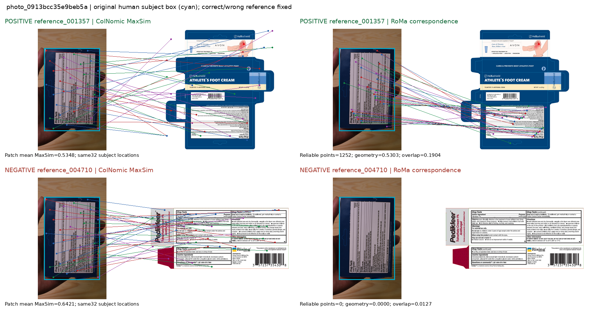
photo_0a0e75a3b7797609：MaxSim 与 RoMa 对应 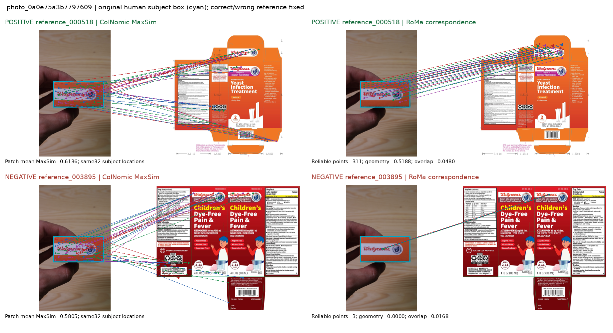
photo_fbc7b6d852b1125b：MaxSim 与 RoMa 对应 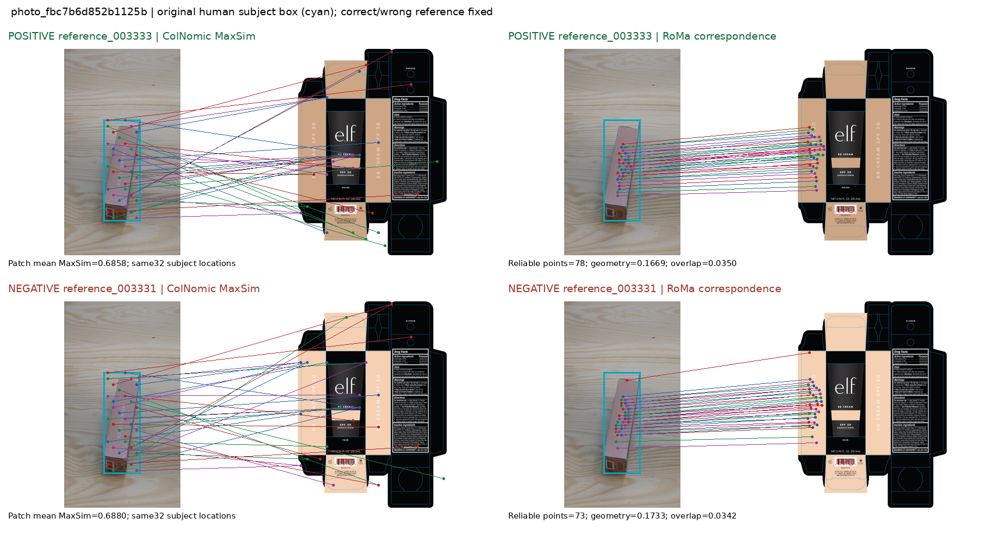
固定原方案，只追加一个图像分支 具体怎么做：15 保留1035，再加入图像修复：1041是怎样得到的
原图像部分为 80% 全图分数＋20% 主体 Token 分数。本轮图像部分为40% 原全图＋20% 原主体 Token＋40% 新图像修复 ；数值分词、主体 OCR 证据、图文各 50% 的融合比例全部沿用。新图像修复为人工框裁剪照片，对 25% 当前参考图分数与 75% 高细节参考图分数作混合。
I = 0.4 × S(原全图, 历史参考图)
+ 0.2 × S(原主体 Token, 历史参考图)
+ 0.1 × S(人工裁剪照片, 当前参考图)
+ 0.3 × S(人工裁剪照片, 高细节参考图)
最终分数 = 0.5 × z(I) + 0.5 × 原生产版数值 OCR 标准化分数
z 按每张照片的全图库候选分数计算。使用 5405 行参考图，按图像 SHA 合并为 5330 个检索候选。主体区域统一使用最新人工审核框，没有使用 SAM 框。这里的“主体 Token”严格沿用旧实现：人工框内的视觉 Token 加模板 Token，并非重新定义为只保留框内像素。原数值方案的 1117 个排名逐个复现，数值 OCR 原始分数重算最大误差为零；本轮未重新识别 OCR，也未训练编码器。
先只用验证集冻结纯图像修复，再固定主体权重 0.2，在新增分支比例 γ∈{0,0.1,0.25,0.5,0.75,1} 中按验证集包装宏平均 Top-1、宏平均 MRR、较小权重依次选择，最终 γ=0.5。测试身份不参与本轮参数选择。验证集为 173 张/21 个身份，测试集为 161 张/18 个身份，两组身份不交叠。
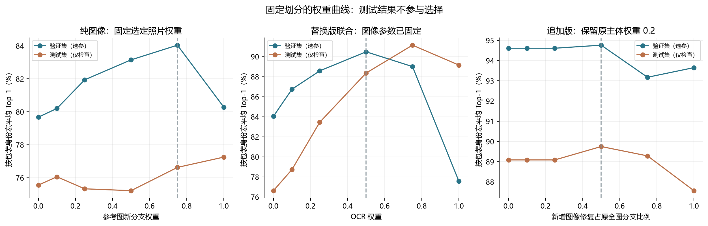
虚线为选定权重。中图是替换版对照，最终追加实验没有再次调整 OCR 权重。曲线中的宏平均与上表按照片统计的正确率口径不同。
范围 原数值＋主体 追加修复 救回 / 新增错误 全部 1035/1117 1041/1117 11 / 5 验证集 163/173 163/173 1 / 1 历史测试集 149/161 150/161 2 / 1 多物体 232/253 235/253 6 / 3 单物体 798/858 801/858 5 / 2 原图像247个失败 173/247 181/247 11 / 3 原图像870个成功 862/870 860/870 0 / 2
场景标签含 6 张未明确照片，故多物体与单物体之和为 1111；全量统计仍覆盖全部 1117 张。原 247 个失败与 870 个成功则完整互补。
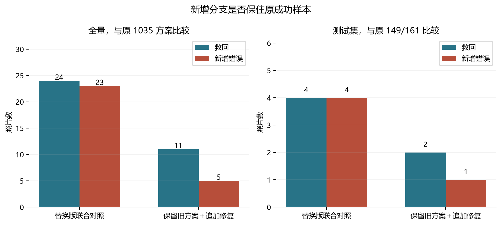
纯图像实验补上了什么证据
本轮纯图像交叉实验达到 944/1117，相对历史原图像 870 修复 113、损害 39；测试为 128/161，相对原 125 修复 13、损害 10。当前运行时原全图对照是 867，不能把它与历史 870 混为同一次重现。参考图放大单独得到的 901/1117 使用原照片，测试为 133/161；因此全量更高的 944 并非所有子集都更好。
此前对 50 个裁剪损害和 50 个成功对照的实验表明：在 50 个损害样本中，保留原尺度 patch 的裁剪正确 34 张，放大裁剪正确 20 张；逐例比较有 18 张因放大变错、4 张变对。固定 Query 读出数量后，18 张中仍有 15 张错误，三种抽样偏移均错的有 12 张。该结果支持输入尺度/采样变化的影响，不能只归结为 Token 数量。
保持输入主体像素不变、改变主体外上下文，仍观察到损害；这说明背景操作会改变编码结果，不能据此声称背景具有独立身份信息。旧实验中的人工框、方向及读出对照保留在证据包；共享侧面也可能有细微身份差异，本报告不把“看起来相同”当作无信息证明。
图像修复与 OCR 的连接
在替换版固定对照中，新纯图像 944 加文字联合修正得到 1036，OCR 救回 104 张并损害 12 张；其中 91 个修复在移除正确候选独有的 OCR 匹配词后消失。这是文字计分确实贡献于修复的证据。该移词实验使用真值选择被删除词，只用于诊断，不能作为可部署选词规则，也不等同于证明字符识别本身完全正确。
新纯图像救回的 113 张中，有 92 张早已被原图像＋文字联合修正救回，因此图像和 OCR 收益大量重叠，不能把各自增益直接相加。保留已有 1035 再追加图像分支，才检验了它对强基线的额外价值。
5 张新增错误：新图像分支的负贡献得到计分干预验证
对最终实际的正确/错误候选对，这 5 张的原全图分支和保留的主体 Token 分支均偏向正确候选，新图像分支均偏向错误候选。保留最终归一化而撤去新图像分数增量，5 张全部恢复 Top-1；保留新分数但恢复旧归一化，只救回 1 张。
这定位到新增分支的计分偏差；其中一例还受归一化变化影响。人工图像复核确认这 5 例当前裁剪覆盖预期主体；没有把 SAM 框当作人工框。具体是哪些字符、排版或可见面差异导致该偏差，仍需对应局部干预，不能仅用负贡献直接宣称编码器丢失信息。
查看这 5 张及每个分支的贡献
展开 5 例照片／人工裁剪／正确参考／错误参考 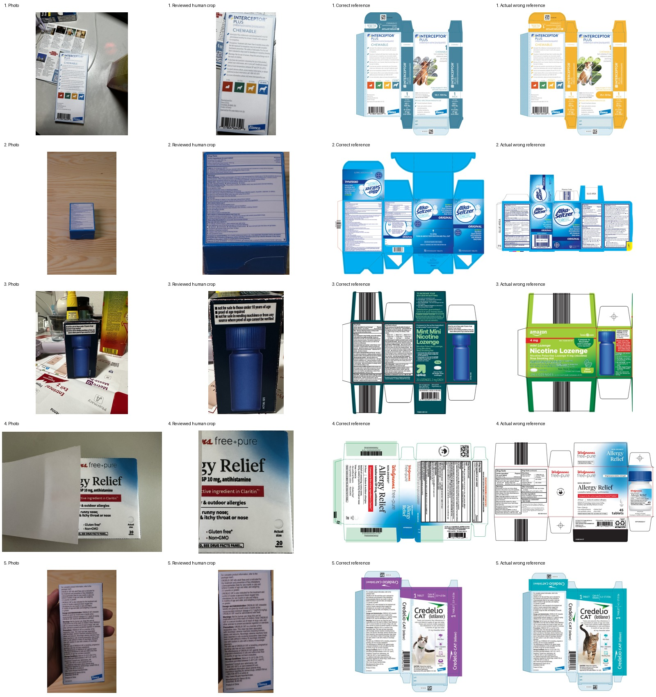
历史1041方案的76个失败：配对贡献与修复方向 具体怎么做：26 最终49张逐例分类、分支/单词/编号归因
当前候选对的计分状态 数量 针对性方向
OCR 配对分数持平，图像排错 28 检查图像局部对应、参考可见面与身份细节。新增 OCR 只有能产生正确的差异词时才可能帮助。 图像和 OCR 均不支持正确候选 16 对照可见面、输入细节和实际词项；仅调两个非正贡献的全局权重不能使这个候选对转正。 图像负贡献推翻 OCR 正支持 16 定位负向图像分支，验证可靠性门控或保守分支权重；不得用测试真值逐图选权重。 OCR 负贡献推翻图像正支持 16 复核负向词的主体归属、数值绑定和分词，并验证融合校准。此前文字联合实验继续作为对照。
以上是完整、可复算的计分层分类，同一照片也可能有多重原因。每例均提供照片、正确与最强错误参考图、原/新排名、Token 分支差额、OCR 词项及行证据、干预响应和修复方向。它不等于所有内部语义根因都被唯一识别；没有把信息不足强行写成确定的“编码丢失”。
上一轮局部复核：条码数字与印刷编号 本节记录上一轮17例局部证据检查，与最新剔除名单不同；局部编号能区分某一候选对，不等于足以唯一决定全图库身份。当前Query可见性标签和fbc颜色更正以上方最新实验为准。
用户指出 17 张照片的共有可见面肉眼难以区分。本轮保留这项用户标记，另行核对原照片、当前人工框裁剪及正确／最终错误参考图：5 张确认存在不同的可见编号；1 张有编号位置但无法可靠读清；11 张在本轮复核中未找到决定性可见差异。 “本轮没找到”不等于证明图像没有身份信息。这 17 张涉及 8 个包装身份，训练／验证／测试分别为 7／6／4 张。
严格单身份结果仍为 1041/1117，76 个失败。 没有将这 17 张自动改判正确，也没有从分母删去。其余 59 个失败未纳入本轮可见面复核，不能把它们称为已确认可辨。此前 5 个新增错误中的 photo_b4f22cae9dac8426 也在用户标记内：计分干预结论保留，但排名损害本身不证明丢失了肉眼可辨的身份线索。
用户标记 17 张 已核实编号差异 5 张 编号不清 1 张 本轮未找到差异 11 张 其他未复核失败 59 张
条码图案、条码数字和印刷编号必须分别检查
Northstar 两张照片的条码数字为 372603327106 ，与正确参考一致，错误参考为 372603700107 。另一些包装的条码是全零或 FPO 占位，条码图案本身不提供有效差异；但旁边的产品数字或印刷编号仍可区分当前候选。以上只针对列出的候选对，不声称这些编号在完整图库内全局唯一。
已有 OCR 缓存揭示两类不同缺陷：4 张虽有可见差异编号，但数字碎片、错读或字符规范化后没有产生当前候选对的区分贡献；另 1 张 87936 已被正确识别 。在后一例中，编号贡献为 +0.06530，其他文字合计 -0.16897，文字总贡献 -0.10367；图像贡献 -0.08408，最终差额 -0.18775。这是“局部正确线索被其他计分抵消”的直接数值证据，不能再统一写成 OCR 没看清。
photo_85e10feb92319a7b · 条码旁产品数字
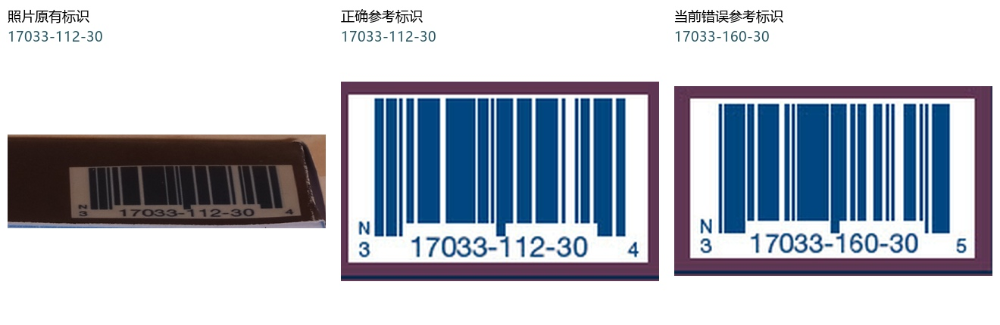
共同警示文字以外，底部邻接面露出可读的产品数字；已有OCR将它拆成碎片，12-30等片段对当前候选对贡献为0。
修复方向：检查标识区域在实际模型输入中的大小与Token贡献；对照独立条码/编号读取及字母数字规范化。正确读取后的匹配仍需验证；本轮未将人工读数回填为新检索成绩。
查看此照片的全部计分证据 photo_8c54b7644f2e05b2 · 条码数字
照片条码数字与正确参考一致、与错误参考不同；已有OCR输出726031132710111，对当前候选对贡献为0。
修复方向：检查标识区域在实际模型输入中的大小与Token贡献；对照独立条码/编号读取及字母数字规范化。正确读取后的匹配仍需验证；本轮未将人工读数回填为新检索成绩。
查看此照片的全部计分证据 photo_c8920e14924534af · 条码数字
照片条码数字与正确参考一致、与错误参考不同；已有OCR输出37260332710116，对当前候选对贡献为0。
修复方向：检查标识区域在实际模型输入中的大小与Token贡献；对照独立条码/编号读取及字母数字规范化。正确读取后的匹配仍需验证；本轮未将人工读数回填为新检索成绩。
查看此照片的全部计分证据 photo_f8f533ac85b05854 · 占位条码下的印刷编号
条码本身都是全零占位，不是有效差异；条码下方的87936与87946不同。已有OCR正确读到87936，正向贡献约+0.0653，但最终配对仍失败。
修复方向：87936已被OCR读对：分析正向编号贡献为何被其他词和图像分数压过，验证编号匹配权重与共有词抑制；不重复把它归为OCR漏读。
查看此照片的全部计分证据 photo_fbc7b6d852b1125b · FPO占位条码下的印刷编号
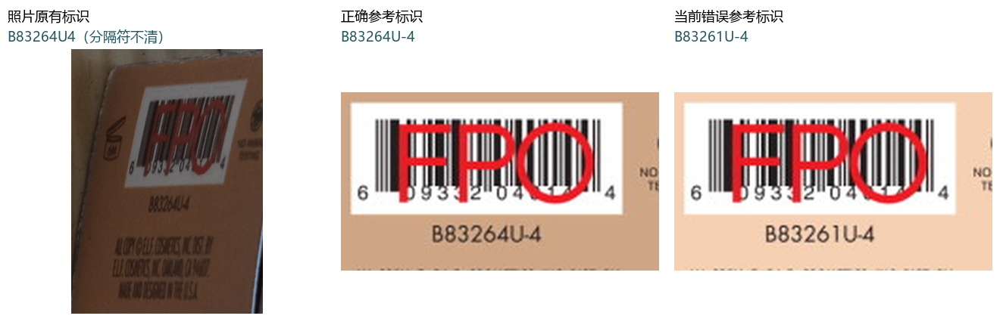
身份差异在条码下方编号，不依赖FPO占位条码本身。已有OCR输出883264U4，对当前候选对贡献为0；需区分字母B/数字8和连字符规则。此例同时被用户指定为同文字、不同排版案例。
修复方向：并行检查布局与编号：固定同一正负候选对，分别控制编号区域、共有文字布局与色差；区分原图像、原融合及最终融合的不同错误候选。
查看此照片的全部计分证据 用户更正：fbc是颜色可分案例 原先“经典排版案例”的称呼已撤回；本例不在最新13张Query剔除名单内。颜色、编号和同面Token干预已完成，见最新实验 。各阶段错误候选不同的历史核对仍保留在证据文件。
由这些证据指向的修复
纯图像侧：检查编号与布局区域在实际缩放输入中的保真度、Token 对应和正负差额，再验证区域分辨率、同面匹配及空间一致性。OCR 侧：先读取完整编号，保持字符顺序、前导零及产品码结构，分别处理数字条码与字母数字印刷码；正确读出的编号则重点检查候选词表覆盖、权重和其他负贡献。全零／FPO 占位图案不能按真实唯一标识加分。这些是由当前证据提出的方向，本轮没有把人工读数回填成新的检索成绩。
展开 17 张照片的完整四图对照 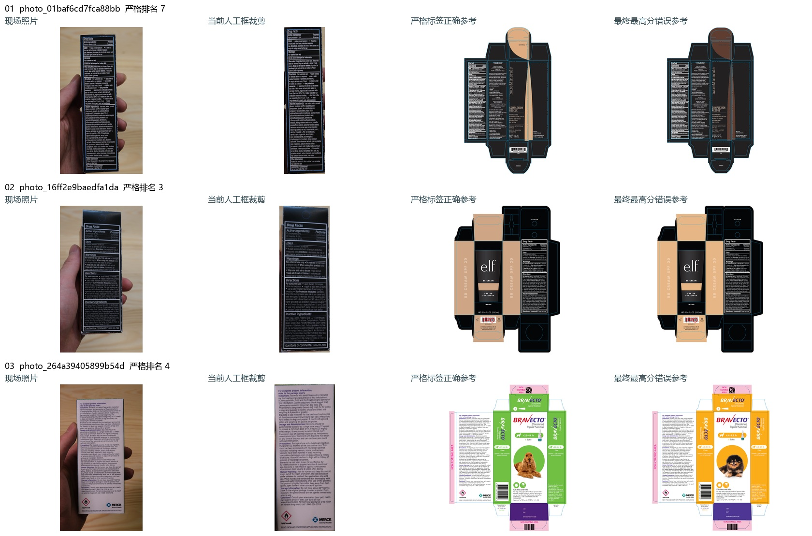
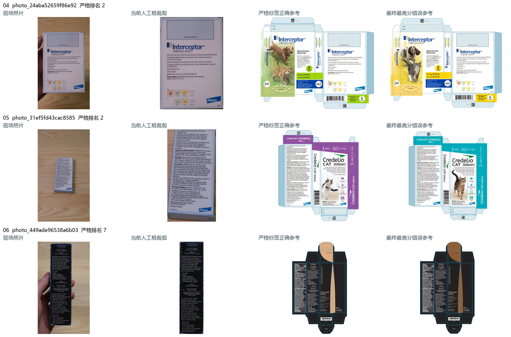
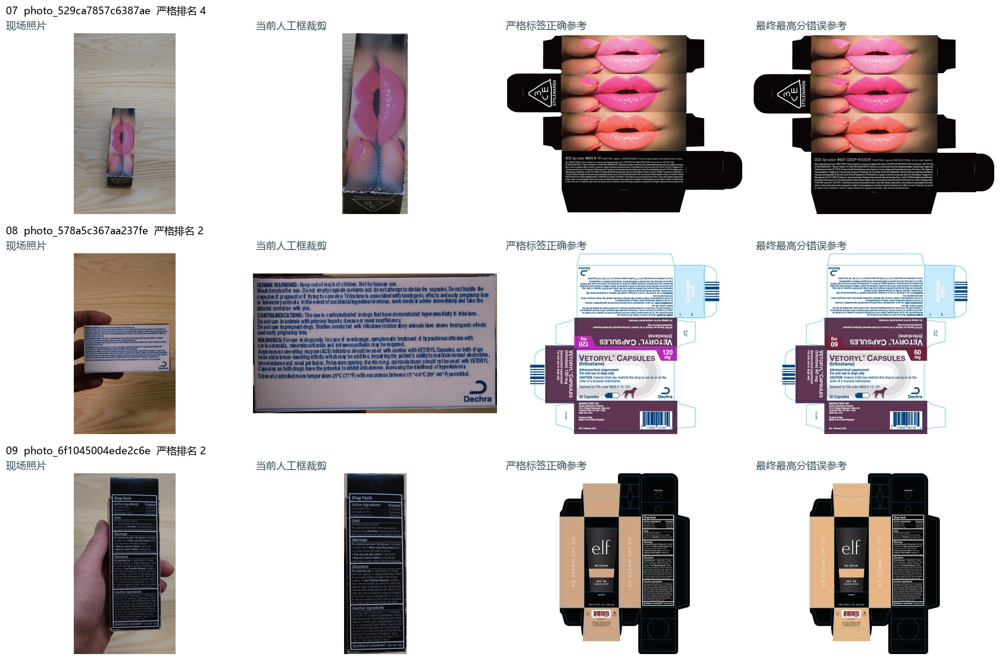
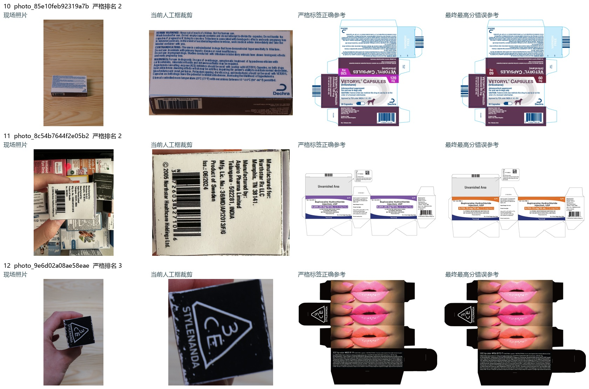
用户标记与独立图像复核记录 · 17 例明细 · 本次复核更新前备份（本地附件）
可核验记录
1117 个旧排名完整复现；追加方案完成 2408 次独立排名校验。最终实际候选对有 6702 条 Token 读出记录，1117 次加权差额重算通过，最大误差 9.39×10⁻⁸。替换版另有 8936 条 Token 记录。两套均保留逐 Token 正负贡献、argmax 匹配索引和输入掩码。
追加实验统计 · 固定实验协议 · 全部1117例 · 剩余76例 · 5例损害干预 · OCR词贡献 · OCR行证据
最终Token配对表 · 1117例逐Token数组（本地附件） · 纯图像交叉实验 · 替换式联合对照 · 裁剪控制实验 · 本报告校验 · 更新前备份（本地附件）
本轮完成 1117 张照片、130 个包装身份、5405 行参考图的冻结特征实验。排名按图像 SHA 合并为 5330 个参考；原图像、原融合、既有文字联合修正、既有数值分词四种方案的错误并集为 292 张，其余 825 张作为共同成功对照。全部 1117 张均有逐例记录，包括新方法新增的错误。
既有文字联合实验直接沿用：主体 OCR＋文字计分修正在全量上相对原融合修复 65 张、损害 11 张，净增 54 张；在多物体 253 张上为 225/253，相对 195/253 修复 34 张、损害 4 张；26 例重点人工复核中修复 19 例。原有“数字连写产生伪规格”和数值分词新增错误的结论保留，不将旧收益记为本轮新增发现。
新主体 Token 权重仅根据原有验证集的包装宏平均 Top1、宏平均 MRR、较小权重依次选择。图像和文字联合版本选择 1；数值分词版本选择 0.2。训练、验证、测试分别为 783/173/161 张、91/21/18 个包装身份。人工主体框提供额外监督，历史测试集已被研究，不能称为新盲测。
主体 Token＋模板 Token 的图像读出为 906/1117，相对 870/1117 修复 67 张、损害 31 张。十组保留相同视觉 Token 数量的随机筛选仅为 824–844/1117，说明主体位置选择的效果不同于任意删 Token。全量包装宏平均变化为 +2.77 个百分点，按包装重采样的 95% 区间为 +0.53 到 +5.09；历史测试集变化 +4.51 个百分点，区间 −1.66 到 +11.61，单独测试子集尚不精确。
将主体 Token 读出加入既有文字联合修正，1026→1035，修复 17、损害 8。加入既有数值分词版本，1029→1035，修复 6、损害 0。两者正确数相同，不表示修复的是同一批照片。保持原图像归一化参数时分别为 1032 和 1034，说明归一化变化也会影响最终融合排名。
即使允许对每张原图像失败照片用真值选择最有利的全图与主体分数凸混合，中心规则也只能覆盖 71/247 个失败；完整包含规则 65/247、面积权重 70/247。由此可排除“只需为全体统一调一个主体权重就能修复所有图像错误”。
前三种对照的恢复集合存在重叠，四项并集为 7 例，另 24 例未被这些对照恢复。扩大边界支持了其中 6 例对边界保留规则敏感；固定模板占比仅解释少量计分变化。禁止参考模板匹配没有救回这 31 例，不能把这批退化主要归给模板匹配。背景视觉 Token 单独读出在其中 26 例正确，也只是原特征计分事实，不能证明背景语义；剩余解释需要像素遮挡及对应区域重编码来区分上下文、边界漏标和偶然匹配。
在原缓存上，对每张图独立优化非负 Token 权重，约束权重和为 1，并同时对全部错误参考图最大化最小正负分差。247/247 个原图像失败都有严格 Top1 解；只允许主体＋模板 Token 时为 246/247，另 1 例落在零间隔边界。
本机独立使用原缓存和 CPU 双精度复算了 494 份权重及 3868 个候选对，最大活动约束分差误差 1.76e-7；优化原始及对偶界最大间隙 7.43e-13。检验未失败，是对照否定了其身份解释。
不重做主体 OCR、文字计分与分词联合实验。本轮新增的是对全量剩余错误的行级删除：使用真值正负候选差，选择最不利的一行或全部不利行，并在完整图库重新排名。另有十组同数量随机删行；同时保留固定归一化与重新归一化两种结果。
删除方案用到了真值，属于诊断实验。负贡献 OCR 行不自动等于识别错误；它也可能是正确识别的公共词、其他物体文字或未选中的规格表。文字联合修正后的同数量随机删行只修复 1–5 例、损害 3–10 例。固定归一化下，定向全部删行修复 22/91 例；重新归一化为 24/91，说明收益主要来自删除的词项贡献，归一化另有影响。
这里按各方案的正确参考与该方案最强错误参考计算分差。例如原融合的 55 例“文字推翻图像正优势”是固定候选对上的事实；原图像全图库正确、融合变错则是 41 例，二者统计对象不同。
容量 250mL/100mL 案例在原缓存上有局部正信号；全图与容量区域读出适度混合可在完整图库从第 2 到第 1，单独 ROI 却只到第 4。它确证该例的读出权重影响，不能推广为所有 ROI 均能修复。
Mucus DM 的方向、对应说明面和成分行共同影响匹配。受控数字画布上，按成分行对应的分差 +0.147809；控制候选 Token 数量后 +0.137912。遮数字相比遮等面积公共字母额外减少 0.013684 的分差。这是在该受控输入下的数字外观与行对应证据。新运行时的参考特征与旧缓存不同，不能把新干预直接当作对旧缓存内部过程的复原。
Bravecto 共有侧面的换行差异确实可见，原“未确认线索”标签已修订。相关区域偏向正确候选，但全图库从第 4 只到第 2，因为另一错误规格也使用同样换行。局部排版可区分一对候选，却未必唯一确定身份。
既有身份划分冻结特征 Probe 没有取得稳定总体提升；布局特异 Probe 的测试身份太少。它们与本轮自由权重负对照共同限制结论：仍不能把全部错误判为编码器信息丢失，也不能声称换匹配即可普遍解决。
公开附件包含 1117 张逐例归因表、全部曲线统计、汇总结果、实验协议、代码与 1247 张经明确授权的照片和参考图缩略图。350738 条完整逐配置决策、494 份优化权重、逐行 OCR 证据及复算输入保留于本地和原服务器，未包含在公开发布中。
默认展示最终联合实验1058/1117仍失败的59张；剔除13张Query后仍失败49张。追加保留旧编号对照1059/1117仍失败58张，剔除后48张，单独列出。照片和参考图随所选方案更新。旧1041方案及原54张诊断保留为历史对照。